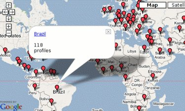

Jabber otwarty protokó³ komunikacji w czasie rzeczywistym oraz powiadamiania o obecno¶ci, oparty o technologiê XML (ang. Extensible Markup Language), podstawa otwartego, zatwierdzonego jako standard internetowy przez IETF (ang. Internet Engineering Task Force), protoko³u XMPP (ang. Extensible Messaging and Presence Protocol).
- S³owa wstêpu
- Nie chcê mi siê tego czytaæ! To jest trudne!
- Utkn±³em, nie wiem co teraz zrobiæ!
- FAQ
- Dodatki
- Linki
- Linki propagandowe
- Autor i licencja tego dokumentu
Zmiany tre¶ci mo¿na ¶ledziæ na stronie JabberFAQ w serwisie GitHub.
Chcesz podlinkowaæ t± stronê? Mo¿esz wykorzystaæ jeden z bannerów - lista banerów. Masz swój ³adniejszy banner, je¿eli chcesz mo¿esz go mi podes³aæ.
S³owa wstêpu
Instant messaging
Komunikacja b³yskawiczna to wymiana zazwyczaj informacji tekstowych w czasie rzeczywistym za pomoc± specjalnego programu zwanego komunikatorem internetowym.
Protokó³
Protokó³ to zbiór zasad okre¶laj±cy sposób porozumiewania siê.
Z... Znamy siê ma³o... Wiêc mo¿e ja bym
powiedzia³ parê s³ów o sobie, najpierw. Urodzi³em siê... Urodzi³em siê w
Ma³kini w 1937 roku w lipcu. Znaczy w po³owie lipca... w³a¶ciwie w drugiej
po³owie lipca w³a¶ciwie... Yyyy... Dok³adnie 17 lipca. Yyyy... No... to tyle
mo¿e o sobie - na pocz±tek... Czy s± jakie¶ pytania?
-- Rejs
Niniejszy dokument jest prób± zebrania wszystkich porozrzucanych po Internecie informacji przydatnych pocz±tkuj±cym oraz ka¿demu kto chcia³by dowiedzieæ siê podstawowych rzeczy na temat wszystkiego co okre¶lane jest mianem Jabbera i XMPP, nowego protoko³u komunikacji b³yskawicznej (ang. Instant Messaging). Na pocz±tek warto wspomnieæ o rzeczy najwa¿niejszej, która odró¿nia Jabbera od innych sieci pozwalaj±cych na komunikacjê w czasie rzeczywistym oraz poka¿e sens ewentualnej przesiadki.
Jak dok³adnie mo¿emy przeczytaæ na g³ównej stronie jabber.org, Jabber zosta³ uznany jako oficjalny standard sieciowy. Ogólnie mówi±c nie jest to kolejny lokalny wymys³ jednej osoby czy kolejnej firmy. Jest to nowy standard w sposobie komunikacji. O zaletach rozwi±zania docenionego przez ekspertów, oraz jak prosto przesi±¶æ siê na Jabbera, mo¿na przeczytaæ poni¿ej.
Ostatnie nowo¶ci w ¶wiecie Jabbera mo¿na przeczytaæ w kronikach Jabbera na JabberPL.org (przet³umaczone) lub w oryginalnej wersji na stronie jabber.org. Mo¿na siê tam dowiedzieæ, ¿e du¿e firmy takie jak Google, Apple, BellSouth, FedEx, EDS, France Telecom, HP, Oracle, Orange, Portugal Telecom, Sun, wiele banków zwi±zanych z Wall Street i liczne amerykañskie agencje rz±dowe wykorzystuj± ju¿ otwarty standard jakim jest XMPP/Jabber. Po do³±czeniu do tej listy komunikatora Google Talk spodziewane jest coraz wiêksze zainteresowanie komunikacj± opart± o Jabbera, a nawet powa¿ne zmiany na rynku samych komunikatorów zdominowanym przez gigantów takich jak AIM, MSN i Yahoo.
Ile osób korzysta z Jabbera?
W Polsce liczba ta jest szacowana na grubo ponad milion wliczaj±c w to tak¿e zamkniêt± sieæ Tlen oraz u¿ytkowników komunikatora Wirtualnej Polski Spik. (Serwer utrzymywany przez WP jabber.wp.pl dostêpny jest dla ka¿dego, nie tylko dla u¿ytkowników Spika.)
Do wspomnianych tutaj komunikatorów nale¿a³oby doliczyæ jednak jeszcze dzia³aj±ce w oparciu o XMPP/Jabber serwisy WWW takie jak fotka.pl, poczta gazeta.pl i rzeszê innych, nie zawsze nie¶wiadomych u¿ywanej technologii, u¿ytkowników.
Dla porównania z sieci Gadu Gadu korzysta szacunkowo oko³o piêciu milionów u¿ytkowników (zgodnie z artyku³em). Na ¶wiecie liczba u¿ytkowników Jabbera szacowana jest na kilkadziesi±t do stu milionów u¿ytkowników. Je¿eli chcesz poznaæ dok³adniejsze liczby szacuj±ce liczebno¶æ poszczególnych sieci mo¿esz zajrzeæ na stronê Wikipedii opisuj±c± komunikacje b³yskawiczn±.
- Polskie dane dostêpne s± tak¿e na gemius.pl - chocia¿ wydaje mi siê, ¿e w przypadku XMPP/Jabber mog± byæ one zani¿one.
Nie chcê mi siê tego czytaæ! To jest trudne!
Strona wydaje siê du¿a, jednak pamiêtaj, ¿e nie trzeba tutaj czytaæ wiêcej ni¿ kilkana¶cie zdañ aby zacz±æ swoj± przygodê z Jabberem. Wiêkszo¶æ strony to odstêpy oraz ró¿ne ilustracje. Je¿eli jednak nadal uwa¿asz, ¿e tego tekstu jest i tak za du¿o, boisz siê, ¿e to wszystko jest za trudne, to przejd¼ od razu do przegl±du dostêpnych klientów Jabbera (programów umo¿liwiaj±cych korzystanie z tej sieci), popatrz jak wygl±daj± na screenach, wybierz tego naj³adniejszego i zobacz jak prosto siê go u¿ywa. To naprawdê nic trudnego. Jest tak proste jak u¿ywanie Gadu-Gadu czy Tlen. Potrzebna jest tylko chwilka aby siê przyzwyczaiæ. Je¿eli nasun± siê jakie¶ pytania wróæ pó¼niej do tekstu.
Przesiadka na Jabbera naprawdê nie trwa d³ugo, nie potrwa wiêcej ni¿ kilka - kilkana¶cie minut. Jedyne co trzeba zrobiæ to
- Wybraæ i zainstalowaæ dowolny program umo¿liwiaj±cy korzystanie z sieci Jabber (instalacja to kilka klikniêæ myszy)
- Wybraæ serwer (rzut okiem na porównanie serwerów z tej strony)
- Skonfigurowaæ nasz program, co zazwyczaj ogranicza siê do wpisania naszego loginu i has³a
- Dodaæ kontakty i ewentualnie skonfigurowaæ transporty do innych sieci (dobrze znane z innych komunikatorów)
Zagubiony? Wybierz klienta jaki ci siê najbardziej podoba.
Zobacz przyk³adowe zrzuty ekranów z popularnych klientów Jabbera.
- Zobacz jak wygl±da Psi;
- Zobacz jak wygl±da Spik;
- Zobacz jak wygl±da Jajc;
- Zobacz jak wygl±da Pandion;
Psi? Jajc? Pidgin? Pandion? Konnekt? Spik? Miranda? Gajim? Google Talk? Kopete? Kliknij na ilustracje klienta, który podoba ci siê najbardziej i przeczytaj wiêcej... Wszystkie poni¿sze programy pozwalaj± na korzystanie z Jabbera.


Bardziej szczegó³owe opisy najpopularniejszych klientów Jabbera.
Utkn±³em, nie wiem co teraz zrobiæ!
Czym jest JID
JID, skrót od ang. Jabber Identifier, to unikatowy identyfikator okre¶laj±cy dan± jednostkê w sieci Jabbera. Naj³atwiej porównaæ go do adresu poczty elektronicznej. Tak samo sk³ada siê z nazwy u¿ytkownika oraz serwera oddzielonego znaczkiem at (czyli popularn± ma³pk± @).
Je¿eli utkn±³e¶ w jakim¶ momencie zabawy z Jabberem, kompletnie nie wiesz co zrobiæ i nie masz kogo poprosiæ o pomoc, mo¿esz zadaæ pytanie pod jednym z poni¿szych adresów. Mile widziane tak¿e wszelkie sugestie dotycz±ce tej strony czy znalezione literówki, nie¶cis³o¶ci oraz b³êdy. Mo¿esz zadaæ pytanie za pomoc± poczty elektronicznej lub zapytaæ na Jabberze.
- Naj³atwiej zadaæ pytanie na polskim forum Jabbera gdzie kto¶ móg³ zapytaæ o podobny problem.
- Kontakt ze mn± za pomoc± adresu podanego w stopce tej strony.
FAQ
- Co to do licha jest?
- Czy jest mi to potrzebne?
- Zasada dzia³ania.
- Zdecydowa³em sie, co mam robiæ.
- Serwer.
- Klienty Jabbera.
- Mam konto co dalej.
- Reszta transportów.
- Podsumowanie.
Dodatki
- Mapa u¿ytkowników Jabbera.
- Emotikony GG.
- Import listy kontaktów GG.
- Jogger czyli blog wprost z listy kontaktów.
- Transport pogody.
- Rozk³ad jazdy warszawskiego ZTM.
- S³ownik polsko-angielski, angielsko-polski.
- Psi oraz certyfikaty serwerów.
- Wikipedia na rosterze.
- Program TV
- Jabber a Tlen.
- Szybkie zarz±dzanie kontaktami na serwerze (Jabber Roster Utility).
- Zasoby, priorytety, ca³a prawda
- Jabber vs. XMPP
- Stany, widzialny, niewidzialny
- Logowanie za pomoc± komunikatora (XEP-0070)
- Inne u¿yteczne linki.
- Linki propagandowe.
1. Co to do licha jest?
Slashdot: Open Real Time Messaging System http://slashdot.org/articles/99/01/04/1621211.shtml
Jedna z pierwszych publicznych wzmianek na temat Jabbera, mo¿na przyj±æ ¿e to okolice czasu kiedy powsta³ -- 4 stycznia 1999
Jeremie writes "Jabber is a new project I recently started to
create a complete open-source platform for Instant Messaging with transparent communication
to other IM systems(ICQ, AIM, etc). Most of the initial design and protocol work is done,
as well as a working server and a few test clients."
Jabber jest nowym, aktualnie rozpoczêtym przeze mnie, projektem
tworzenia kompletnej otwartej platformy komunikacji b³yskawicznej po³±czonej z innymi
systemami IM (ICQ, AIM, etc.). Wiêkszo¶æ prac nad projektowaniem i tworzeniem
protoko³u zosta³a wykonana, podobnie jak dzia³aj±cy
serwer i kilka testowych klientów. -- moje t³umaczenie
PC World Komputer: Jabber http://www.pcworld.pl/artykuly/37733.html
Rewolucja w ¶wiecie komunikatorów internetowych
Chcesz korzystaæ jednocze¶nie z Gadu-Gadu, ICQ i innych komunikatorów w jednym programie? Nie podoba ci siê interfejs komunikatora, którego u¿ywasz,i chcesz mieæ wiêkszy wybór opcji? Masz do¶æ pamiêtania numerów znajomych z Gadu-Gadu lub ICQ? Straci³e¶ listê kontaktów, bo Windows mia³ awariê? Kto¶ w³ama³ siê na twoje konto w komunikatorze lub pods³ucha³ twoje rozmowy? Denerwuj± ciê ci±g³e awarie serwera twojego komunikatora? Ju¿ z tych powodów warto wypróbowaæ zyskuj±cy coraz wiêksz± popularno¶æ Jabber.
WIEM: Internet http://wiem.onet.pl/wiem/0028a0.html
Jabber opiera siê na g³ównej zalecie Internetu czyli rozproszeniu, dziêki temu jest odporny na problemy innych komunikatorów czyli problemy z centralnymi serwerami je obs³uguj±cymi.
Internet, pewna ilo¶æ sieci lokalnych (LAN) po³±czonych w jedn± wspóln± sieæ. S³owo to napisane wielk± liter± (Internet) oznacza ogólno¶wiatow± sieæ komputerow±, bêd±c± po³±czeniem tysiêcy sieci lokalnych z ca³ego ¶wiata. Podwaliny pod jej powstanie po³o¿ono na pocz±tku lat 60., kiedy amerykañska firma RAND Corporation prowadzi³a badania nad mo¿liwo¶ci± dowodzenia i ³±czno¶ci w warunkach wojny nuklearnej. Na podstawie jej raportów podjêto badania nad skonstruowaniem sieci komputerowej mog±cej funkcjonowaæ pomimo zniszczenia jej czê¶ci np. w wyniku ataku atomowego.
2. Czy jest mi to potrzebne?
Aby unikn±æ sytuacji kiedy chcesz siê z kim¶ skontaktowaæ, a twój komunikator akurat odmawia pos³uszeñstwa - czy wielkich czarnych dziur tak jak sobota 10 stycznia 2004, kiedy GG nie dzia³a³o ca³y dzieñ wybierz Jabbera. Dla nieprzekonanych poni¿ej najwa¿niejsze zalety oraz pewne wady. Poni¿ej dodatkowo cytat dla tych, którzy uwa¿aj± ¿e ten dokument to czysta propaganda ;)
" (...) Jedziecie do stolicy kraju kapitalistycznego.
Który to kraj ma byæ mo¿e nawet tam i swoje ... plusy. Rozchodzi siê jednak
o to, ¿eby te plusy nie przes³oni³y wam minusów. (...) "
-- Mi¶
2.1. Czy jestem bezpieczny?
Przesiadka z oryginalnego klienta Gadu-Gadu podwy¿sza tak¿e bezpieczeñstwo danego komputera. Sam oryginalny klient Gadu-Gadu po ostatnich doniesieniach nie sprawia wra¿enia bezpiecznego, a jego du¿e powi±zanie z przegl±dark± Internet Explorer, powoduje ¿e jest nara¿ony tak¿e na b³êdy w³a¶nie tej przegl±darki. Najlepszy rozwi±zaniem jest wybranie godnego zaufania komunikatora oraz bezpiecznej przegl±darki internetowej.
- Niewyt³umaczalna amnezja GG (2007-05-08; ¼ród³o Blog Minio)
- Nowy trojan na GG (2006-12-26; ¼ród³o Blog Patryka Zawadzkiego)
- £añcuszkowy wirus na GG (2006-10-25; ¼ród³o Dziennik Internautów)
- Dziwne praktyki i niepewno¶æ dostarczonej informacji (2005-12-25; ¼ród³o oficjalna strona GG)
- Malware przez GG (2005-12-12; ¼ród³o ¼ród³o cert.pl)
- Widzialny - niewidzialny - niedopracowania w protokole GG (2005-06-25; ¼ród³o wiadomosc.info)
- Exploit rozsy³any w sieci Gadu-Gadu (2004-12-22; ¼ród³o hacking.pl)
- Dwa nowe b³êdy w Gadu-Gadu (2004-12-18; ¼ród³o hacking.pl)
- Dziury w Gadu-Gadu; (2004.12.17; ¼ród³o gazeta.pl)
- Powa¿na luka w Gadu-Gadu; (2004.09.13; ¼ród³o cert.pl)
- Kolejne bardzo powa¿ne b³êdy w Gadu-Gadu (2004-12-14; ¼ród³o hacking.pl)
- Powa¿ne luki w Gadu-Gadu; (2004.12.14; ¼ród³o cert.pl)
2.2. Zalety Jabbera
G³ówn± zalet± Jabbera jest jego uniwersalno¶æ. Zdobywanie coraz to nowych sieci i pozwalanie na komunikacjê miedzy milionami ludzi bez wzglêdu na wykorzystywan± technologie czy platformê.
- Oficjalny standard sieciowy.
- Jest uniwersalny, nie tracisz kontaktu z u¿ytkownikami innych sieci takich jak GG czy ICQ. Mo¿na z jednego miejsca komunikowaæ siê z u¿ytkownikami wielu sieci.
- Nie ogl±dasz denerwuj±cych reklamówek i nie jeste¶ nara¿ony na dziwne praktyki ¿adnej firmy.
- Nie p³acisz za Jabbera ani grosza. Protokó³, serwery oraz wiêkszo¶æ klientów jest darmowa.
- Twoje informacje s± zawsze bezpieczne poniewa¿ komunikacja z serwerem (klient - serwer) oraz komunikacja miedzy serwerami (serwer - serwer) Jabbera mo¿e byæ szyfrowana. (SSL)
- Nie jest narzucony jeden klient, nie jeste¶ ograniczony do jakiegokolwiek systemu. (Windows, Linux, MacOS, inne)
- Podczas komunikacji mo¿na korzystaæ z szyfrowanie (klient - klient) PGP. (PGP; pgp.com; gnupg.org;)
- Ca³y otoczony jest przez idee open source przez co ca³y czas prê¿nie siê rozwija. (open source; opensource.org;)
- Nie posiada centralnego punktu, którego awaria powoduje zatrzymanie ca³ej sieci.
- Bardziej przyjazne identyfikatory, ju¿ nie musisz byæ numerem
1855002366221, tylko przyk³adowoaneta@jabber.org. Dodatkowo bardzo szybko mo¿esz postawiæ swój w³asny serwer we w³asnej domenie i byæ identyfikowany unikalnym identyfikatorem np.:s³awek@borewicz.com.
2.3. Rzeczy, które mog± przeszkadzaæ w Jabberze
- Transporty zapewniaj± prawie ca³± funkcjonalno¶æ. Przyk³adowo w Jabberze nie mamy mo¿liwo¶ci przesy³ania pliku miedzy u¿ytkownikiem Jabbera a u¿ytkownikiem GG czy wklejenia obrazka w okno rozmowy (kolejny dodatek z GG)
- Nie ma mo¿liwo¶ci przeprowadzenia rozmów g³osowych czy wideo konferencji, nie jest to jeszcze zdefiniowane w standardzie - chocia¿ niektóre klienty Jabbera, przyk³adowo Spik, je oferuj±, a sam standard jest w trakcie rozwoju.
- Jabber to nie jest magia ani perpetuum mobile, je¿eli ¼le siê wybierze serwer on tak¿e mo¿e czasami nie dzia³aæ. Na szczê¶cie istniej± wtedy setki innych, które dzia³aj± wy¶mienicie.
- Jabber to nie jest multikomunikator i jego rozwój nie idzie w kierunku obs³ugi wszystkich innych sieci. Transporty zapewniaj±ce kontakt z innymi sieciami to tylko dodatek do Jabbera, a nie jego podstawowa funkcjonalno¶æ.
2.4. Dlaczego akurat Jabber?
Protokó³
Protokó³ to zbiór zasad okre¶laj±cy sposób porozumiewania siê.
Warto powtórzyæ, jedn± i chyba najwa¿niejsz± rzecz. Jabbera warto wybraæ z jednego prostego powodu. Jest to standard sieciowy. Zamiast pytaæ dlaczego mam u¿ywaæ Jabbera zapytaj dlaczego u¿ywasz protoko³u HTTP do serfowania po Internecie, dlaczego u¿ywasz protoko³u FTP do pobierania plików, dlaczego u¿ywasz protoko³u SMTP do obs³ugi poczty? Chocia¿ protokó³ XMPP (podstawa i rdzeñ wszystkiego co okre¶lane jest jako Jabber, dla uproszczenia mo¿na przyj±æ, ¿e oznacza to prawie to samo - jakie s± ró¿nice mo¿na sprawdziæ tutaj) nie jest jeszcze tak popularny jak trzy wymienione powy¿ej, to z pewno¶ci± z biegiem czasu do³±czy do grona swoich powszechnie znanych kolegów.
Jak widaæ powy¿ej wybieranie innych rozwi±zañ na d³u¿sz± metê mija siê z celem, to tak samo jak robienie przegl±darki internetowej, która nie potrafi³aby zgodnie z protoko³em HTTP pobieraæ stron WWW z sieci. Co nam by przysz³o z tego gdyby¶my nawet zrobili sobie w³asny protokó³ i kilka serwerów go obs³uguj±cych, je¿eli ca³y ¶wiat u¿ywa czego¶ zupe³nie innego. Jabber to w³a¶nie identyczny przyk³ad. Serwerów Jabbera na ¶wiecie s± setki, a mo¿e tysi±ce. U¿ytkowników jeszcze wiêcej. Wizja jednego komunikatora jest bardzo kusz±ca. Mo¿e nied³ugo rozmowa z ka¿dym w czasie rzeczywistym bêdzie tak naturalna jak wys³anie e-maila, do tego starcza tylko pytanie "Podaj swój adres".
Co daje standard taki jak XMPP (Jabber)?
- Niewa¿ne czym
- Niewa¿ne gdzie
- Niewa¿ne z kim
- Wa¿ne jest tylko jak, zawsze w ten sam sposób uniwersalny i pewny
Ka¿dy system operacyjny, ka¿de mo¿liwe urz±dzenie, platforma, w ka¿dym miejscu, z ka¿dym tak samo. Nie musisz nic zmieniaæ. U¿ywaj dalej tego systemu operacyjnego, tego komputera, tego jêzyka - Jabber jest ca³kowicie uniwersalny.
Dobrze opracowany standard, taki jak XMPP (Jabber) to du¿a zaleta. Nie jest siê nara¿onym na b³êdy i niedopracowanie rozwi±zañ. Do³±czaj±c otwarto¶æ oprogramowania uzyskujemy godny zaufania protokó³ oraz prawie wolne od b³êdów oprogramowanie. Przyk³adowo b³êdne rozwi±zania przyjête w sieci Gadu Gadu przez d³ugi czas powodowa³y, ¿e nie zawsze po³±czenie z serwerem by³o po³±czeniem szyfrowanym, pomimo takiego ustawienia w opcjach. Drugim takim niedopatrzeniem jest kolejka wiadomo¶ci oczekuj±cych (wysy³anych do roz³±czonego u¿ytkownika). Po jej przepe³nieniu wiadomo¶ci s± "gubione", a osoba wysy³aj±ca je nie otrzymuje o tym ¿adnego komunikatu, mimo ¿e wiadomo ¿e tre¶æ nigdy nie trafi do adresata. Takie b³êdy powoduj±, ¿e tracimy zaufanie do danych rozwi±zañ. Chocia¿ wiadomo, ¿e zawsze mo¿e przytrafiæ siê jaki¶ b³±d to w otwartym standardzie, gdzie ka¿dy go mo¿e zauwa¿yæ, prawdopodobieñstwo ich wyst±pienia jest zminimalizowane.
2.5 Powtórka z historii
E-mail jako taki zosta³ wymy¶lony w roku 1965, autorami pomys³u byli
Louis Pouzin, Glenda Schroeder i Pat Crisman - wówczas jednak us³uga ta s³u¿y³a jedynie
do przesy³ania wiadomo¶ci od jednego u¿ytkownika danego komputera do innego u¿ytkownika
tej samej maszyny, a adres emailowy w zasadzie jeszcze nie istnia³. Us³ugê polegaj±c± na
wysy³aniu wiadomo¶ci od u¿ytkownika jednego komputera do u¿ytkownika innego wymy¶li³ w roku
1971 Ray Tomlinson, on równie¿ wybra³ znak @ (at) do rozdzielania nazwy u¿ytkownika od nazwy
maszyny (a pó¼niej nazwy domeny internetowej). Na pocz±tku do wysy³ania e-maili s³u¿y³
protokó³ CPYNET, pó¼niej wykorzystywano FTP, UUCP i wiele innych protoko³ów, a na pocz±tku
lat 80. Jonathan B. Postel napisa³ specjalnie do tego celu protokó³ SMTP.
-- Poczta elektroniczna, Wikipedia
Podczas pobierania i wysy³ania poczty elektronicznej dzi¶ nikt nie zastanawia siê czy wysy³a j± na serwer pocztowy, który u¿ywa danego oprogramowania. Nie zastanawia siê tak¿e, czy nadawca listu, który w³a¶nie czyta, u¿ywa danego klienta poczty elektronicznej. Uniwersalne protoko³y pozwalaj± nam na skupienie siê na czytaniu tre¶ci bez zwracania uwagi na szczegó³y techniczne. Oczywi¶cie nie by³o tak zawsze. Stan dzisiejszy to efekt oko³o 20 lat wymy¶lania nowych rozwi±zañ oraz szukania wspólnego standardu.
Czy podobna idea podczas rozmów za pomoc± komunikatora nie jest kusz±ca? Gdyby nagle znik³ podzia³ na sieci i ka¿dy móg³by rozmawiaæ z ka¿dym. W³a¶nie dlatego powsta³ Jabber. Jabber to krok do prostej komunikacji.
3. Zasada dzia³ania
Sieæ Jabbera w swoim dzia³aniu podobna jest do dzia³ania poczty elektronicznej.
Mamy wiele serwerów, które komunikuj± siê miêdzy sob±. Na rysunku mamy przyk³adowe
serwery alfa.org, delta.pl oraz tango.de.
Wszystkie serwery komunikuj± siê ze sob± co zaznaczone jest jako ciemno fioletowe
po³±czenia [3]. Serwery na rysunku komunikuj±
[2] siê tak¿e z wszystkimi innymi serwerami na
¶wiecie oznaczonych jako inny serwer.
Na serwerach u¿ytkownicy rejestruj± konta. U¿ytkownik rajmund
zarejestrowa³ siê na serwerze tango.de, u¿ytkownik michal
zarejestrowa³ siê na serwerze alfa.org, a u¿ytkownik aneta
ma konta na dwóch serwerach alfa.org oraz delta.pl.
Posiadanie konta na danym serwerze jest jednoznaczne z posiadaniem identyfikatora
nazywanego Jabber ID (w skrócie JID).
U¿ytkownik rajmund identyfikowany jest przez JID
rajmund@tango.de, michal jako michal@alfa.org,
a aneta posiada dwa konta na ró¿nych serwerach, czyli tak¿e dwa
identyfikatory aneta@delta.pl oraz aneta@alfa.org.
Wszyscy nasi przyk³adowi u¿ytkownicy s± zalogowani do swoich serwerów - symbolizuje
to jasno fioletowa linia [4]. U¿ytkownik aneta
zalogowany jest jednocze¶nie do dwóch serwerów, a u¿ytkownik michal
korzysta z funkcji oferowanej przez sieæ Jabbera czyli podwójnego logowania.
Inne sieci, gdy próbujemy zalogowaæ siê podwójnie, odrzucaj± jedno z po³±czeñ.
Tutaj mamy mo¿liwo¶æ wielokrotnego logowania i okre¶lenia wa¿no¶ci naszego
po³±czenia przez nadanie mu odpowiedniego priorytetu. Wiadomo¶ci do nas dochodz±
do komputera gdzie zalogowani jeste¶my z wy¿szym priorytetem. Przyk³adowy
michal jest teraz w pracy, gdzie zalogowany jest z priorytetem
równym 5. Wszystkie wiadomo¶ci do niego kierowane s± do komputera w pracy.
Kiedy skoñczy pracê i wy³±czy swój komputer, pozostanie jeszcze komputer domowy,
który ca³y czas jest zalogowany do sieci. Teraz wszystkie wiadomo¶ci trafiaj±
do niego. Wszyscy nasi u¿ytkownicy mog± siê miêdzy sob± komunikowaæ. U¿ytkownik
rajmund mo¿e wys³aæ wiadomo¶æ do u¿ytkownika na innym serwerze,
czyli przyk³adowo do u¿ytkownika aneta. U¿ytkownik aneta
posiada dwa konta na oddzielnych serwerach. Je¿eli jeden z serwerów przestanie
dzia³aæ, zawsze ma do dyspozycji swoje drugie konto. Mimo awarii dzia³ania
jednego serwera ca³a sieæ dzia³a prawid³owo. Kontakt utracony jest nie ze
wszystkimi u¿ytkownikami, ale tylko z u¿ytkownikami wy³±czonego serwera. Na
koniec warto wspomnieæ jak odbywa siê komunikacja z innymi sieciami typu Gadu-Gadu
czy ICQ [1]. U¿ytkownik komunikuje siê tylko
z serwerem, przez serwer wysy³a wiadomo¶ci, a jego kontakty przechowywane
s± tak¿e na serwerze. Je¿eli nasz serwer umo¿liwia nam komunikacjê z innymi
sieciami przez tzw. transporty, nasza wiadomo¶æ przeznaczona do u¿ytkownika
danej sieci dochodzi do serwera, a serwer po przekszta³ceniu jej na odpowiedni
format przesy³a dalej do serwera innej sieci. Oczywi¶cie musimy posiadaæ konto
(numer GG, czy UIN)
w danej sieci, ¿eby do niej cokolwiek wys³aæ czy odbieraæ.
4. Zdecydowa³em sie, co mam robiæ
Wszelkie podstawowe informacje uzyskasz na tej stronie. Na pocz±tek musisz wiedzieæ, ¿e Jabber nie dzia³a tak samo jak inne komunikatory. Nie posiada on centralnego punktu, serwera. Zasada dzia³ania podobna jest do dzia³ania poczty elektronicznej. Na ¶wiecie jest tysi±ce serwerów, które komunikuj± siê ze sob±. Tak samo jak w poczcie musisz wybraæ serwer, który najbardziej tobie odpowiada oraz wymy¶liæ sobie swój identyfikator, który bêdzie nas na tym serwerze identyfikowa³.
Wiêcej informacji znajduje siê na oficjalnych stronach po¶wiêconych Jabberowi
5. Serwer
Serwer
Serwer to program udostêpniaj±cy swoje us³ugi innym programom, które s± nazywanymi klientami.
Najwa¿niejszy jest wybór odpowiedniego serwera. Dalsze poczynania z Jabberem zale¿± wy³±cznie od niego. Oczywi¶cie nic nie stoi na przeszkodzie aby mieæ dwa konta i u¿ywaæ drugiego na wypadek wszelkich awarii na serwerze pierwszego. Nie mo¿na powiedzieæ popularnego stwierdzenia w sieci GG typu "Jabber mi nie dzia³a" - sieæ Jabbera dzia³a bardzo dobrze, to jedynie twój serwer mo¿e mieæ problemy. Odpowiedni wybór uchroni nas od wszelkich komplikacji.
Czyli powtórzê jeszcze raz aby bezproblemowo korzystaæ z sieci Jabbera trzeba koniecznie wybraæ stabilny i godny zaufania serwer. Regu³y nie ma, mo¿e to byæ jeden z wielkich czo³owych serwerów publicznych, ale mo¿e lepiej wybraæ ma³y osiedlowy prowadzony przez znajomego admina.
Jak ka¿dy pewnie wie istniej± zestawienia pokazuj±ce który serwer sieci Gadu-Gadu akurat dzia³a, mo¿na to sprawdziæ przyk³adowo na stronach serwisu wiadomosc.info czy stronach mini wortalu Gadu-Gadu. Tak samo, mo¿na zerkn±æ na zestawienie publicznych serwerów Jabbera. Je¿eli nie chce nam siê patrzeæ na wykresy, to tutaj widaæ jasno w procentach ile czasu serwer nie dzia³a³.
Najaktualniejsza lista publicznych, raczej polskich, serwerów Jabbera jest dostêpna pod adresem http://www.jabberpl.org/Serwery/Spis. Flagowym serwerem Jabbera w Polsce jest serwer prowadzony przez ludzi z JabberPL.org. Z moich do¶wiadczeñ wynika, ¿e przez swoj± popularno¶æ i niekomercyjny charakter bywa czasem zawodny. Wybieraj±c serwer prowadzony przez hobbystów otrzymamy serwer o najwiêkszej liczbie nowych rozwi±zañ, ale bez wsparcia finansowego bêdzie on prawdopodobnie czasem niestabilny. Wybieraj±c serwer za którym stoi firma, i pieni±dze, zawsze musimy pamiêtaæ, ¿e rz±dziæ siê on mo¿e w³asnymi prawami i prawdopodobnie dzia³a po to ¿eby na siebie zarobiæ. Trzeba wy¶rodkowaæ swoje potrzeby, oczekiwania i wybraæ serwer najlepszy dla siebie.
Je¿eli zale¿y nam na oficjalnym identyfikatorze wybierzemy sobie serwer
jabber.org. Je¿eli wolimy co¶ krótszego to mo¿e zainteresujemy siê
serwerem jid.pl. Je¿eli chcemy serwer komercyjny mamy serwer
firmowany przez Wirtualn± Polskê czyli jabber.wp.pl. Gdy chcemy
za³o¿yæ konto na ma³ym amatorskim serwerze upewnijmy siê, ¿e nie jest to serwer
krzak, który stoi na bardzo s³abej maszynie i jest gotów za tydzieñ znikn±æ z
mapy Internetu. Mamy naprawdê du¿y wybór i nale¿y ten fakt wykorzystaæ. W
ostateczno¶ci mo¿emy samemu postawiæ w³asny serwer, który, je¿eli
jeste¶my wymagaj±cym u¿ytkownikiem, z pewno¶ci± bêdzie najbardziej wygodnym
rozwi±zaniem.
Publiczne serwery Jabbera:
- jabber.org
- jabberpl.org
- jabber.uznam.net.pl
- jabber.piekary.net
- jabber.elektron.com.pl
- jabster.pl (wraz z JIDem dostêpna poczta, klient na WWW i archiwum wiadomo¶ci na serwerze)
- jabber.wp.pl
- histeria.pl
- jabber.gda.pl
- jabber.2000-plus.pl
- jabber80.com
- jabber.alternatywa.info
- KDETalk.net
- ubuntu-users.com
- jid.pl
- jabbim.pl (JID dostêpny w kilku domenach)
Je¿eli dysponujemy odpowiednim komputerem, mo¿emy postawiæ w³asny serwer Jabbera, który oczywi¶cie jest darmowy. Wiêcej informacji na http://www.jabber.org/admin/.
- Przyk³adowy serwer Jabbera/XMPP, jak zachwalaj± twórcy jest on darmowy, wieloplatformowy (napisany w Javie), prosty w instalacji i z wygodnym interfejsem via WWW. Mo¿esz postawiæ swój serwer w kilkana¶cie minut tak prosto jak zainstalowa³e¶ swojego klienta. Nie musisz spêdziæ ca³ego dnia na jego konfiguracji.
- Artyku³y przydatne dla administratorów
- Lista serwerów które mo¿emy uruchomiæ na w³asnej maszynie
Enterprise Instant Messaging
Poni¿szy kawa³ek to krótki opis produktów firmy Jive. Dziêki nim mo¿emy bardzo szybko zbudowaæ we w³asnej firmie w³asn± sieæ s³u¿±c± do wewnêtrznej komunikacji. Pokazaæ chcê tak¿e, jak prosto mo¿na wykorzystaæ Jabbera do stworzenia samemu podobnych rozwi±zañ. Produkty Jive to bardzo prosty w obs³udze serwer, klient oraz narzêdzia dodatkowe u³atwiaj±ce zarz±dzanie ca³o¶ci±. Ciekawym rozwi±zaniem jest tzw. skinning czyli proste dostosowanie komunikatora do danej firmy. Mamy mo¿liwo¶æ dodania w³asnego logo, zamkniêcia i ograniczenia komunikacji do firmowego serwera. Ca³o¶æ jest dodatkowo wspierana przez menad¿era, który u³atwia ³atwe zapanowanie nad wszystkim.
Poniewa¿ u¿ywanie w firmach komunikatorów to rzecz dzi¶ raczej naturalna wiêc stworzenie w³asnego rozwi±zania bêdzie tylko lekkim ustandaryzowaniem samej komunikacji. Ograniczenie do firmowego serwera i firmowego komunikatora mo¿e zwiêkszyæ bezpieczeñstwo. Dodanie identyfikatorów podobnych, czy wrêcz identycznych, do tych u¿ywanych w poczcie elektronicznej sprawi, ¿e komunikacja za pomoc± komunikatora stanie siê bardziej naturalna. Do tego warto wspomnieæ o takich aspektach jak odgórne zarz±dzanie list± kontaktów u¿ytkowników. Dodawanie automatyczne pracowników wspó³pracuj±cych ze sob±, dzia³ów czy osoby z tzw. pomocy technicznej. Wszystkie te rzeczy to rozwi±zania raczej niespotykane w innych protoko³ach s³u¿±cych do komunikacji b³yskawicznej. Enterprise Instant Messaging to rzecz przydatna. Nale¿y wspomnieæ, ¿e rozwi±zania takie to dobry pomys³ tak¿e w innych organizacjach, szko³ach, uczelniach wy¿szych.
6. Klient Jabbera
Klient
Klient to program pozwalaj±cy na po³±czenie siê z serwerem i korzystanie z jego us³ug.
S³owami wstêpu warto zacytowaæ Encyklopediê Wikipedia i poprawnie zdefiniowaæ klienta - tak aby unikn±æ mylnego ³±czenia sieci z samym klientem, co ma miejsce przyk³adowo dla GG. Jabber nie ma odgórnie narzuconego jednego programu. Co wiêcej, samych programów umo¿liwiaj±cych korzystanie z Jabbera jest dziesi±tki.
W odniesieniu do komputerów klient oznacza oprogramowanie korzystaj±ce
z us³ug dostarczanych przez serwer. Przyk³adem mo¿e byæ ca³a rodzina oprogramowania
typu telnet czy ssh. Jednym z klientów w tej rodzinie jest putty - program
pozwalaj±cy u¿ytkownikowi na korzystanie z us³ug na zdalnym komputerze.
- Wikipedia, Wolna Encyklopedia
Wracaj±c do spraw Jabbera, drugim wa¿nym wyborem jest wybór klienta, mo¿emy
przejrzeæ je wyszukuj±c na Google jabber client (zobacz
wyniki szukania "jabber client"), albo skorzystaæ z pomocy strony http://www.jabber.org/user/clientlist.php.
Klientów jest du¿o, s± one dostêpne na wiele platform: Amiga, MacOSX, MacOS9,
J2ME RIM, J2ME, Java, PalmOS, Symbian, WinCE, Linux/Unix, Windows, Przegl±darki
Internetowe (WWW), PocketPC, BeOS ,Smartphone czy jako plugin Mozilla.
Klienty Jabbera szerzej opisane na tej stronie
- Spik; klient promowany przez portal Wirtualna Polska;
- Konnekt; polski multikomunikator;
- Psi; wieloplatformowy klient Jabbera;
- Jajc; rozbudowany windowsowy klient Jabbera;
- Pandion; lekki windowsowy klient Jabbera;
- Pidgin; wieloplatformowy multikomunikator i klient Jabbera;
- Miranda; lekki multikomunikator;
- Gajim; komunikator dla u¿ytkowników Gtk+ i nie tylko;
- Google Talk; komunikator Google oparty o otwarte technolgie;
- Kopete; Mi³y dla oka komunikator dla KDE;
- Gizmo; VoIP z obs³ug± Jabbera;
- iChat; Komunikator dla komputerów z pod znaku jab³ka;
Klienty nieopisane tutaj szerzej, ale tak¿e warte uwagi
- EKG2; klient Jabbera w trybie tekstowym;
- JWChat; klient Jabbera napisany w Java Script (screen1 | screen2);
- GreenThumb; applet Jabbera (screen1 | screen2 | screen3);
- Jeti; kolejny klient Jabbera napisany w Javie.
- GNU Gadu; linuksowy klient Jabbera;
- Meebo; interesuj±cy klient na stronie WWW;
- JBother; napisany w Javie wiêc dostêpny na ka¿dej platformie oraz na stronie WWW;
- WengoPhone; wieloplatformowy klient Jabbera oraz SIP
Polskie akcenty jabberowe, czyli klienty umo¿liwiaj±ce korzystanie z Jabbera pisane przez Polaków
- Spik (dawny Wpkontakt) (opisywany szerzej ni¿ej);
- Konnekt (opisany szerzej ni¿ej);
- Gnu Gadu;
- Papla;
- Hapi;
- kf;
Wiêksza lista popularniejszych komunikatorów poni¿ej, to na wypadek gdyby kto¶ twierdzi³ ¿e powy¿sze mu siê nie podobaj±. Pe³na aktualna lista dostêpna na stronach jabber.org. Ciekawe zestawienie klientów znajduje siê tak¿e na stronach Wikipedii. Mo¿na porównaæ mo¿liwo¶ci klientów Jabbera z klientami innych sieci.
Adium X, Agile, Akeni, Ayttm, BuddySpace, Cabber, centericq, Chatopus, Chatterbox, CJC, Coccinella, Colibri, e4Applet, Enigma3, EntreatCE, Exodus, Fire, Gabber1, Gabber2, Pidgin, GCN, Gnome Jabber, GNU Gadu, Gossip, GreenThumb, Gush, IMChat, IMCom, imov, IR-Jabber, IRSIM, Jabber for BeOS, Jabber Messenger J2ME, Jabber Messenger Pocket, Jabber Messenger RIM, Jabber Messenger Smartphone, Jabber Messenger Symbian, Jabber Messenger WebClient, Jabber Messenger Windows, jabber.el, JabberApplet, JabberFoX, Jabbernaut, JabberWana, Jabberwocky, JabberX, Jabberzilla, JAJC, Jeti, JWChat, JWGC, Kava, kf, KomKom, Kopete, Lluna, MessageMate, MiMessenger, MirandaIM, mjabber, myJabber, myJabber IM for Pocket PC, neos, Nitro, Pandion, Proteus, Psi, Rhombus IM Client, Rhombus IM Mobile Client, Rival, SIM, Syndicon, TipicIM, TipicMe, Tkabber, tkJabber, TransactIM, Trillian Pro, TSIM, TVJab, UNIVerse, Vista, Wpkontakt, Spik, wxSkabber, Yabber.
6.1 Psi
Najwa¿niejszym plusem jest obs³uga wielu kont jednocze¶nie. Dodatkowo umo¿liwia
korzystanie z Open PGP,
jest tak¿e dostêpny na wiele platform. Najwiêkszym minusem jest dziwny uk³ad
historii oraz wolne tempo rozwoju. Zak³adanie konta krok po kroku w Psi jest
opisane w moim krótkim tutorialu na temat Psi.
Strona g³ówna programu to http://psi.affinix.com/.
Ostatnio pojawi³o siê kilka nieoficjalnych modyfikacji oryginalnego klienta Psi. Lista adresów sk±d mo¿na je ¶ci±gn±æ dostêpna jest na polskim forum Jabbera. Poprawki dostêpne w takich modyfikacjach to miêdzy innymi statusy offline, wska¼niki statusów opisowych, statusy opisowe pod kontaktem, awatary, spolszczenie, nowe ikony i inne mniejsze rozszerzenia.
- Dostêpny na wiele platform;
- Obs³uga wielu kont jednocze¶nie;
- Prosta budowa;
- Dostêpne spolszczenie programu;
- Mo¿liwo¶æ wykorzystania szyfrowania PGP (trzeba dysponowaæ programem GPG), szyfrowania komunikacji klient - klient;
- Pe³na przegl±darka us³ug na serwerach Jabbera;
- Testy nad implementacj± Jingle (rozmowy g³osowe);
- Wsparcie dla XEP-0070;
- Dla niektórych zbyt ascetyczny;
- Niekoniecznie intuicyjny;
- Dosyæ wolno rozwijany, nie zaimplementowano jeszcze rozszerzania funkcjonalno¶ci przez zastosowanie systemu wtyczek.


Wiêcej zrzutów ekranu mo¿na zobaczyæ w sekcji Psi krok po kroku.
6.1.1 Psi i GPG
GPG
GPG, skrót od ang. GNU Privacy Guard, to darmowy zamiennik komercyjnego PGP, programu s³u¿±cego do profesjonalnego szyfrowania danych.
Aby korzystaæ z udogodnieñ Open PGP musimy odwiedziæ http://www.gnupg.org/ i zaopatrzyæ siê w sam program, który jest oczywi¶cie darmowy. Mo¿na doinstalowaæ graficzn± nak³adkê tak± jak np.: GPGshell z http://www.jumaros.de/rsoft/index.html lub od razu przej¶æ do rzeczy i zacz±æ dzia³aæ prosto z konsoli. Na pocz±tek generowanie w³asnych kluczy:
gpg --gen-key
Przy problemie z generowaniem kluczy, oraz braku czasu na czytanie dokumentacji,
dodam ¿e program dla Windowsa domy¶lnie powinien znajdowaæ siê w katalogu
C:\gnupg, a jego ¶cie¿ka dostêpu ustawiona w PATH.
Gdy to nam nie wystarcza, nale¿y popatrzeæ chwilkê na rejestr. Je¿eli nie
masz pojêcia nic o rejestrze to lepiej tam nic nie ruszaæ, warto dodaæ ¿e
wszelkie zmiany robi siê na w³asn± odpowiedzialno¶æ i mog± one mieæ przy du¿ym
pechu niekorzystny wp³yw na nasz system.
Je¿eli chcemy zmieniæ domy¶lne po³o¿enie programu nale¿y zmieniæ wpisy w
ga³êzi
HKEY_LOCAL_MACHINE/Software/GNU/GNUPG/ w kluczach gpgProgram
oraz HomeDir.
Je¿eli chcemy aby ka¿dy u¿ytkownik mia³ osobno miejsce dla swoich kluczy,
nale¿y dodaæ do ga³êzi
HKEY_CURRENT_USER/Software/GNU/GNUPG/ wpis HomeDir
o warto¶ci np.: C:\klucze_anety\. Najlepiej oczywi¶cie podpi±æ
tam swój folder Moje Dokumenty.
Dla Linuksa wszelkie manipulacje z po³o¿eniem samego programu i kluczy poszczególnych u¿ytkowników nie s± potrzebne. Mo¿e w nowszych wersjach GPG dla systemu Windows problem ten zostanie jako¶ rozwi±zany.
Potem upubliczniamy swój klucz publiczny wygenerowany za pomoc± polecenia:
gpg --export --armor > moj_klucz_publiczny.asc
Przyk³adowy klucz publiczny mo¿e wygl±daæ tak jak mój: (mój klucz publiczny)
A klucze naszych znajomych importujemy prawie analogicznie komend±:
gpg --import klucz_kolegi.asc
Samo ustawienie Psi ogranicza siê do kilku klikniêæ w ustawieniach konta i wyborze naszego klucza, a potem dla ka¿dego kontaktu prawym klawiszem z menu podrêcznego wybieramy odpowiedni klucz publiczny danej osoby, który wcze¶niej zaimportowali¶my. Podczas rozmowy szyfrujemy nasze wiadomo¶ci zamykaj±c ikonkê k³ódki. Wiêcej informacji mo¿na doczytaæ z FAQ samego Open PGP oraz w dokumentacji Psi na http://psi.affinix.com/psi_docs/.
6.2 Jajc
Rozbudowany klient Jabbera. Ciekawostk± jest obs³uga skinów Windowsa XP, które mo¿na
sobie zaaplikowaæ z http://www.themexp.org/,
dysponuje tak¿e takimi funkcjami jak potwierdzenia odebrania wiadomo¶ci czy
znane z GG statusy offline. Jest mo¿liwo¶æ
u¿ywania PGP.
Zak³adanie konta oraz u¿ywanie Jajca krok po kroku opisane s± na http://jabber.itn.pl/docs/jajc_tutorial/
oraz http://jajc.pjwstk.edu.pl/,
strona domowa natomiast tutaj http://jajc.ksn.ru/.
Aby szyfrowaæ nasze wiadomo¶ci PGP, mo¿na skorzystaæ z wersji programu darmowych dla u¿ytku domowego. Lista dostêpna pod adresem: http://www.pgpi.org/products/pgp/versions/freeware/.
- £atwo rozszerzalny przez system wtyczek;
- Dostêpne spolszczenie programu;
- Mo¿liwo¶æ wykorzystania szyfrowania PGP (trzeba dysponowaæ programem PGP), do szyfrowania komunikacji klient - klient;
- Korzysta z windowsowych skórek;
- Pe³na przegl±darka us³ug na serwerach Jabbera;
- Import i eksport kontaktów
- Dostêpny tylko dla Windows;
- Przez mnogo¶æ opcji mo¿e byæ trudny w konfiguracji;
- Czasami zbyt rozbudowany i zasobo¿erny;
- W niektórych miejscach nieintuicyjny interfejs;
- Ostatnio ma³o dynamicznie rozwijany;

Wiêcej zrzutów ekranu mo¿na zobaczyæ w sekcji Jajc krok po kroku.
6.3 Pandion
£atwy w obs³udze, w polskiej wersji jêzykowej i bardzo ³adnie siê prezentuj±cy. Mo¿e i brak mu kilku zaawansowanych funkcji, ale na pewno jest dobrym rozwi±zaniem dla pocz±tkuj±cych. Wszystko jasno i przejrzy¶cie. Opisy kontaktów pod kontaktami, tak jak w oryginalnym kliencie GG. Strona domowa http://www.pandion.be/.
Je¿eli podoba ci siê Pandion, warto przyjrzeæ siê polskiemu komunikatorowi tworzonemu na podstawie Pandiona, st±d bardzo du¿e podobieñstwo, czyli komunikatorowi Hapi. Poniewa¿ tworzony przez Polaków, bardziej odnosi siê do naszych polskich realiów, co czasem jest pomocne. Sam Hapi jak na razie jest jeszcze w fazie rozwoju. Twórcy chc± stworzyæ przyjazny u¿ytkownikowi i ³atwy w obs³udze komunikator.
- Polska wersja jêzykowa (wybór przy instalacji programu);
- Prosta konfiguracja;
- Mi³y dla oka interfejs;
- Wbudowane ikony dla ró¿nych sieci (Gadu-Gadu, Tlen czy programów Psi itd.);
- Ma³e rozmiary i stosunkowo ma³o zasobo¿erny;
- Dostêpny tylko dla Windows, bardzo mocno powi±zany z Internet Explorerem;
- Brak mo¿liwo¶ci wysy³ania wiadomo¶ci w trybie message;
- Brak pe³nej przegl±darki us³ug na serwerach Jabbera;
- Nieco cukierkowy wygl±d;
Wiêcej zrzutów ekranu mo¿na zobaczyæ w sekcji Pandion krok po kroku.
6.4 Spik
(dawny WP Kontakt)
natywny
Je¿eli us³uga taka jak GG czy ICQ jest natywna, znaczy to ¿e nasz klient ma w sobie program do porozumiewania siê z tymi sieciami. Program odpowiada za po³±czenie z innymi sieciami i komunikacje.
transport
Je¿eli us³uga jest oparta o transporty (tzw. bramki) na serwerze, znaczy to ¿e nasz klient wysy³a informacje do serwera, który t³umaczy je i porozumiewa siê z innymi sieciami. Serwer odpowiada za po³±czenie i komunikacje.
natywno¶æ vs. transporty
Podej¶cie natywne jak i transporty maj± swoje plusy i minusy. Je¿eli transport dzia³a ¼le np.: z powodu przeci±¿enia, nasza komunikacja z inn± sieci± bêdzie przerywana. Rozwi±zanie oparte o biblioteki natywne zazwyczaj dzia³a bezproblemowo. Jednak kiedy wykorzystujemy transporty zyskujemy du¿± swobodê i uniwersalno¶æ. Ka¿dy inny klient jabberowy bêdzie potrafi³ u¿ywaæ naszych kontaktów. Je¿eli korzystamy z transportów zmiana klienta bêdzie niezauwa¿alna. W przypadku us³ug natywnych nie mo¿emy zmieniæ programu na inny bez zmian w konfiguracji, zazwyczaj w takiej sytuacji przenoszone s± tylko kontakty jabberowe, trzymane po stronie serwera.
Ciekawostk± jest promowanie Jabbera przez WP, ich komunikator Spik (dawny WP Kontakt), który wydawaæ siê powinno powinien byæ zamkniêty tylko dla u¿ytkowników portalu WP sam wykorzystuje protokó³ Jabbera i pozwala na komunikacjê z innymi u¿ytkownikami. Wiêcej informacji na stronie http://spik.wp.pl/.
Ostatnio nowa ulepszona wersja komunikatora Wpkontakt dosta³a now± nazwê Spik. Autorzy programu chwal± siê, ¿e za pomoc± Spika mo¿na przeprowadzaæ rozmowy g³osowe o lepszej jako¶ci ni¿ na popularnym Skype. Do tego sama rozmowa wymaga mniejszej przepustowo¶ci. Sam program zosta³ zmodernizowany i dodano kilka ulepszeñ. Z moich testów zajmuje mniej w pamiêci operacyjnej systemu.
Je¿eli masz problem z instalacj± i konfiguracj± koniecznie zerknij na stronê domow± z pomoc± lub zadaj pytanie konsultantowi (szczegó³y na stronach WP).
- Co¶ czego nie ma nigdzie indziej czyli ¿ywy konsultant odpowiadaj±cy na wszystkie pytania zwi±zane z programem;
- Polski produkt, polska wersja jêzykowa, polskie strony z pomoc±;
- Prosta konfiguracja (do uruchomienia GG czy ICQ wystarczy jedno klikniêcie mysz±);
- Mo¿liwo¶æ sprawdzania poczty;
- Zapisywanie ustawieñ prosto na serwerze, po zalogowaniu w ka¿dym miejscu nasz Spik wygl±da jak sobie ustawili¶my;
- Mo¿liwo¶æ rozmów g³osowych i wideo konferencji (tylko miêdzy u¿ytkownikami Spik) ;
- Natywna obs³uga sieci Gadu-Gadu oraz ICQ (uniezale¿nienie siê od nieraz niestabilnych transportów umieszczonych na serwerach);
- Multimedialne dodatki takie jak odczytywanie tre¶ci wiadomo¶ci w jêzyku polskim przez syntezator mowy oraz mo¿liwo¶æ rozmów g³osowych: Nawijka na tradycyjne telefony, czy zwyk³ych konferencji na komputerze.
- Dostêpny tylko dla Windows;
- Brak pe³nej przegl±darki us³ug na serwerach Jabbera;
- Czasami denerwuj±cy interfejs, du¿o "upiêkszaczy" i wyskakuj±cych okienek (kwestia gustu);
- Niektóre opcje niekompatybilne z innymi klientami Jabbera (np.: przesy³anie plików, rozmowy g³osowe i wideokonferencje) czyli dostêpne tylko dla u¿ytkowników tego klienta;
- Brak mo¿liwo¶ci wysy³ania wiadomo¶ci w trybie message;
- Natywna obs³uga sieci Gadu-Gadu oraz ICQ (brak przeno¶no¶ci jaka istnieje w przypadku korzystania z transportów);

Wiêcej zrzutów ekranu mo¿na zobaczyæ w sekcji Wpkontakt/Spik krok po kroku.
6.5 Pidgin
Multikomunikator
Multikomunikator to specyficzny rodzaj komunikatora internetowego pozwalaj±cy na korzystanie z kilku sieci naraz.
Pidgin to rozbudowany multikomunikator oraz klient Jabbera. Obs³uguje wiele protoko³ów natywnie (w tym polskie GG, istnieje wtyczka do sieci Tlen, IRC czy ICQ). Dodatkowo istnieje mo¿liwo¶æ rozbudowania go o nowe wtyczki, które mo¿emy sami sobie napisaæ. Program jest ca³kowicie spolszczony, a od wersji 2.0 mo¿e pochwaliæ siê jednym z lepszych i bardziej przejrzystych interfejsów u¿ytkownika. Mimo, ¿e nie jest to tylko klient Jabbera, przez co nie oferuje wszystkich rozszerzeñ protoko³u Jabber, mo¿na go ¶mia³o wszystkim poleciæ bo jest to naprawdê dopracowany program. Wiêcej informacji na stronie domowej komunikatora.
Ciekawostk± jest tekstowa wersja komunikatora, nazywana Finch, oparta o te same biblioteki co Pidgin. Finch jest przeznaczony dla systemów unixowych, uruchomiony na komputerze gdzie dzia³a ju¿ Pidgin bêdzie korzysta³ z tych samych plików konfiguracyjnych. Umo¿liwia to na ³atwe odpalenie tego komunikatora zdalnie spoza domu bez konieczno¶ci ponownego konfigurowania czy rozdwajania historii rozmów. Zrzut ekranu komunikatora Finch mo¿na zobaczyæ poni¿ej.
Je¿eli szuka³e¶ komunikatora GAIM to chcia³em przypomnieæ, ¿e to stara nazwa komunikatora Pidgin. W skutek ugody prawnej miêdzy AOL a twórcami komunikatora, zmieniono jego nazwê tak aby nie kojarzy³a siê z podobnym produktem firmy AOL.
- Dostêpny tak¿e w wersji tekstowej (tylko systemy unixowe)
- Dostêpny na wiele platform;
- Obs³uga wielu kont dla ka¿dego protoko³u;
- Spolszczenie dostêpne ju¿ w czasie instalacji, sprawdzanie pisowni w oknie rozmowy;
- Prosta obs³uga;
- Rozszerzalny przez system wtyczek;
- Namiastka meta kontaktów (chowanie wielu kontaktów do tej samej osoby w jednym wpisie na li¶cie kontaktów)
- Rozbudowany i bardzo dobrze zaprojektowany interfejs
- Natywna obs³uga wielu sieci (oprócz Jabbera tak¿e Gadu-Gadu, ICQ, Yahoo, MSN, IRC etc. - uniezale¿nienie siê od nieraz niestabilnych transportów umieszczonych na serwerach)
- Zintegrowane z kontem Google Mail powiadomienia o poczcie
- Brak mo¿liwo¶ci wysy³ania wiadomo¶ci w trybie message;
- Brak pe³nej przegl±darki us³ug na serwerach Jabbera;
- Natywna obs³uga wielu sieci (brak przeno¶no¶ci jaka istnieje w przypadku korzystania z transportów);


6.6 Konnekt
Polski multikomunikator oferuj±cy w zestawie wtyczek wtyczkê umo¿liwiaj±c± korzystanie z sieci Jabbera. Sam program jest mi³y dla oka i przyjazny nawet dla pocz±tkuj±cego u¿ytkownika. Dodatkowo to, ¿e jest pisany przez Polaków, posiada ró¿ne rozszerzenia nie oferowane przez innych np.: wklejanie obrazków w okno rozmowy z u¿ytkownikiem sieci Gadu-Gadu. Strona domowa Konnekta to http://www.konnekt.info/.
Je¿eli masz problem z instalacj± i konfiguracj± koniecznie zerknij na pomoc dostêpn± na stronie domowej Konnekta lub na poradnik "Jak szybko i przyjemnie zainstalowaæ i skonfigurowaæ Konnekta".
- Polski program, polska wersja jêzykowa, polska pomoc dostêpna na stronie domowej;
- Pomys³owe, znane z ICQ, kilka poziomów obs³ugi programu dla nowicjuszy i zaawansowanych u¿ytkowników;
- Rozszerzalny przez system wtyczek;
- Prê¿nie rozwijany;
- Do wyboru pluginy z natywn± obs³ug± wielu sieci (oprócz Jabbera, Gadu-Gadu, Tlen - uniezale¿nienie siê od nieraz niestabilnych transportów umieszczonych na serwerach);
- Stonowany interfejs(dostêpne wodotryski typu prze¼roczysto¶æ);
- Dostêpny tylko dla Windows;
- Miejscami drobne niedoróbki w interfejsie (testowa³em wersjê 0.6.21.121);
6.7 Miranda
Rozbudowany multikomunikator z du¿± ilo¶ci± rozszerzeñ. Miranda jest mi³a dla oka, prosta i ma³a. Przez ograniczenie siê tylko do potrzebnych funkcjonalno¶ci i wy³±czenie zbêdnych wtyczek zajmuje ma³o zasobów. Dziêki przemy¶lanemu interfejsowi mo¿e dodatkowo zajmowaæ bardzo ma³± czê¶æ pulpitu. Dodatkowo mo¿na poeksperymentowaæ z prze¼roczysto¶ci± okienka. Wiêcej informacji na stronie domowej Mirandy oraz na polskim forum Mirandy.
- Dostêpne spolszczenie (plugin);
- Ma³y rozmiar pakietu instalacyjnego, ma³o zasobo¿erny, zajmuje ma³o miejsca na pulpicie;
- Rozszerzalny przez system wtyczek (chyba najwiêksza liczba dostêpnych wtyczek ze wszystkich komunikatorów);
- Do wyboru pluginy z natywn± obs³ug± wielu sieci (oprócz Jabbera, AIM, IRC, Gadu-Gadu, Tlen - uniezale¿nienie siê od nieraz niestabilnych transportów umieszczonych na serwerach);
- Stonowany interfejs(dostêpne wodotryski typu prze¼roczysto¶æ);
- Du¿e polskojêzyczne forum po¶wiêcone Mirandzie gdzie mo¿na poszukaæ odpowiedzi na ka¿de swoje pytanie;
- Dostêpny tylko dla Windows;
- Mnogo¶æ wtyczek mo¿e przeraziæ nowicjusza;


6.8 Gajim
Gajim to bardzo przyjemny dla oka i szybko rozwijany klient Jabbera. Napisany jest z my¶l± o u¿ytkownikach GTK+, wiêc ucieszy pewnie szczególnie zwolenników GNOME. To wszystko zainteresuje u¿ytkowników Linuksa, a oczywi¶cie istnieje tak¿e wersja dla systemu Windows. Wiêcej informacji na stronie domowej projektu.
- Dostêpny na wiele platform;
- Mi³y dla oka i ergonomiczny interfejs;
- Obs³uga wielu kont;
- Wspó³praca z Open PGP (GnuPG);
- Polska wersja jêzykowa, sprawdzanie pisowni w oknie rozmowy;
- Obs³uga metakontaktów;
- Wsparcie dla Google Mail, powiadomienie o nowej poczcie;
- Wsparcie dla XEP-0070;
- Problemy z szybko¶ci± dzia³ania przy wielu zdarzeniach;
- Wersja dla Windows nie wpasowuje siê zbyt dobrze w systemowy wygl±d;


6.8 Google Talk
Komunikator wspierany przez Google. Na razie jest w fazie testów i nie oferuje wielu funkcji, ale ma nadrobiæ to w przysz³o¶ci, mo¿na go traktowaæ wiêc jako ciekawostkê. Oferuje on mo¿liwo¶c komunikacji tekstowej opartej o technologie XMPP/Jabber oraz rozmów g³osowych VoIP. Oprócz funkcji dobrze znanych z komunikatorów firma Google zadba³a o dobr± integracje ze swoim serwisem poczty elektronicznej Google Mail. Wiêcej informacji na oficjalnej stronie projektu.
Ostatnim ruchem Google by³a integracja komunikatora z poczt± elektroniczn±. Teraz mo¿liwa jest zwyk³a rozmowa z poziomu WWW Google Mail. Dodatkowo mo¿liwe jest wyszukiwanie archiwalnych rozmów tak samo jak archiwalnych listów. Historia gdy j± w³±czymy, zapisywana jest na serwerze zawsze kiedy u¿ywamy naszego konta, bez wzglêdu na to czy robimy to z poziomu WWW, Google Talk, czy za pomoc± innego klienta Jabbera.
- Niewielki rozmiar;
- Ergonomiczny i mi³y dla oka interfejs;
- Zintegrowany z poczt± Google Mail, dostêpny jest z poziomu WWW
- Mo¿liwo¶æ prowadzenia pe³nej historii rozmów sk³adowanej po stronie serwera i wyszukiwanie w niej za pomoc± mechanizmów Google tak¿e z poziomu interfejsu WWW poczty Google Mail;
- Wspierany przez siln± firmê;
- Implementacja Jingle (rozmowy g³osowe);
- Mo¿liwo¶æ podpiêcia konta wraz z reszt± aplikacji pod w³asn± domenê.
- Du¿a mo¿liwo¶æ rozwoju i dodania ciekawych innowacji;
- Globalno¶æ, czyli raczej zapomnijmy o oficjalnym transporcie GG etc.;
- Google Talk potrafi korzystaæ tylko z serwera Google;
- Ci±gle jest to wersja beta;
")
6.9 Kopete
Potê¿ny multikomunikator pisany specjalnie dla KDE. Wspiera wiele protoko³ów i jest ca³y czas prê¿nie rozwijany. Rozszerzalny o dodatkowe pluginy. Posiada wiele zaawansowanych funkcji. Mo¿na go dowolnie konfigurowaæ, wp³ywaæ na wygl±d samej konwersacji, przypinaæ awatary do kontaktów. Wiêcej informacji na stronie domowej projektu.
- Wspiera wiele protoko³ów (multikomunikator);
- Mi³y dla oka, ³adnie prezentuje siê styl rozmowy ala iChat (na screenie);
- Szyfrowanie rozmów GPG, korzystanie z TeX i inne u¿yteczne pluginy;
- Wspierany przez du¿± spo³eczno¶æ;
- Najlepiej prezentuje siê na KDE.;
- Dostêpny tylko dla systemów linuksowych.;
(Niestety nie mia³em mo¿liwo¶ci zrobienia screenów pod KDE)


6.10 Gizmo
Gizmo to alternatywa dla rozmów g³osowych w Internecie, tzw. telefonii internetowej.
Wspiera otwarty standard dla rozmów g³osowych
SIP
oraz otwarty standard dla rozmów
tekstowych. Kontakty na li¶cie kontaktów oprócz numerów telefonu czy numeru SIP posiadaj±
miejsce na wpisanie Jabber ID. Pozwala to na komunikacje tekstow± z u¿ytkownikami Jabbera.
Ka¿dy u¿ytkownik Gizmo jest widoczny jako normalny kontakt na serwerze
chat.gizmoproject.com.
Pomimo tylko podstawowego wsparcia dla Jabbera sam klient jest wart uwagi z powodu obs³ugi protoko³u SIP. Jest to pe³nowarto¶ciowa zamiana dla komunikatora Skype, a do tego oparta o otwarte standardy. Wiêcej informacji na stronie producenta.
- wieloplatformowy (Windows, Linux, Mac)
- wsparcie dla SIP
- mo¿liwo¶æ telefonowania na telefony stacjonarne i komórkowe
- mo¿liwo¶æ komunikacji PC - PC
- tylko podstawowe wsparcie Jabbera
6.11 iChat
Podstawowy multikomunikator w systemach Mac OS X. Dostêpny za darmo dla ka¿dego u¿ytkownika komputerów Apple. Obs³uguje protoko³y AOL (Aim screen name, ICQ Uin, netscape.net screen name, oraz dedykowane konto .mac) i Jabber. Chocia¿ brak w nim wsparcia dla przesy³ania plików miêdzy ró¿nymi klientami zgodnymi z XMPP to przyjazny interfejs, prosta obs³uga i integracja z systemem operacyjnym sprawi³, ¿e iChat zyska³ sobie wielu zwolenników. Wiêcej na stronie producenta.
- integracja z systemem operacyjnym
- wsparcie du¿ej firmy - Apple
- prosta obs³uga
- przyjazny interfejs
- dostêpny tylko dla Mac OS
- brak zaawansowanych funkcji takich jak np.: przegl±darka us³ug na serwerze
- brak polskiej wersji jêzykowej bez polonizatora przygotowanego przez Apple IMC Poland


{kind=link}
{kind=link}
{kind=link}
{kind=link}
{kind=link}
{kind=link}
{kind=link}
{kind=link}
{kind=link}
{kind=link}
{kind=link}
{kind=link}
{kind=link}
{kind=link}
{kind=link}
{kind=link}
{kind=link}
{kind=link}
{kind=link}
{kind=link}
{kind=link}
{kind=link}
{kind=link}
{kind=link}
{kind=link}
{kind=link}
{kind=link}
{kind=link}
{kind=link}
{kind=link}
{kind=link}
{kind=link}
{kind=link}
{kind=link}
{kind=link}
{kind=link}
{kind=link}
(Informacje o iChat i zrzuty ekranów zebrane przez Glubone. Lista kontaktów pochodzi z jednej ze stron w sieci.)
7. Mam konto, co dalej
Transport
Transport na serwerze Jabbera, zwany tak¿e bramk±, od ang. gateway, to specjalny program t³umacz±cy informacje pomiêdzy ró¿nymi sieciami. Umo¿liwia to dostêp i rozmowê z u¿ytkownikami innych sieci takich jak GG czy ICQ.
roster
Roster to tzw. lista kontaktów, ang. contact list, przechowywany na serwerze spis wszystkich znajomych u¿ytkowników.
Je¿eli wybór komunikatora jest ju¿ za tob±, posiadasz ju¿ konto na serwerze i je poprawnie skonfigurowa³e¶. Mo¿esz spróbowaæ dodaæ pierwszego u¿ytkownika do swojej listy kontaktów. Lista kontaktów jest trzymana na serwerze, wiêc mamy j± zawsze pod rêk± obojêtnie z jakiego miejsca siê ³±czymy.
Ka¿dy u¿ytkownik jest opisany przez swój identyfikator na danym serwerze.
Identyfikator ten nazywany jest Jabber ID, w skrócie JID.
Jego znaczenie odszyfrowujemy podobnie jak adres poczty elektronicznej. Dla
u¿ytkownika gosia@chrome.pl oznacza on danego u¿ytkownika o identyfikatorze
gosia na serwerze chrome.pl.
Je¿eli chcemy dodaæ do naszej listy kontaktów, nazywanej te¿ czasami jako
roster, u¿ytkownika,
ograniczamy siê do wpisania jego JID.
Nastêpnie musimy wys³aæ swoj± autoryzacjê (authorize to) oraz poprosiæ o autoryzacjê
(authorize from) od danego u¿ytkownika. Bez autoryzacji nie bêdziemy widzieæ
czy dany u¿ytkownik jest online.
Teraz przyszed³ czas na dodanie u¿ytkowników innych sieci, czyli skorzystanie
z transportów. Ka¿dy serwer posiada w³asne transporty, czyli bramki konwertuj±ce
wiadomo¶ci pomiêdzy ró¿nymi sieciami. Pierwsz± rzecz± jak± musimy zrobiæ to
sprawdziæ jakie transporty s± na naszym serwerze. Nastêpnie lokalizujemy przyk³adowo
transport GG i najczê¶ciej
prawym klikniêciem dostajemy siê do menu podrêcznego gdzie mo¿na wybraæ opcje
zarejestruj. Po otworzeniu okienka wpisujemy swój numer GG
oraz has³o. Po zaakceptowaniu i krótkiej chwili otrzymujemy informacje ¿e
zostali¶my autoryzowani przez bramkê. Od tej chwili mo¿emy dodawaæ u¿ytkowników
GG do swojej listy. JID
dla takiego u¿ytkownika wygl±da zazwyczaj podobnie do 123456@gg.chrome.pl.
8. Reszta transportów
Oprócz transportów typu GG, ICQ, MSN za pomoc± których mo¿emy komunikowaæ siê z innymi sieciami, istniej± tak¿e inne. Warto zarejestrowaæ siê w katalogu publicznym. Tak aby inni mogli nas wyszukaæ gdy zajdzie taka potrzeba. Mo¿na sprawdziæ pogodê w pogodynce czy wys³aæ pocztê. Szczegó³y dotycz±ce transportów znajduj± siê zazwyczaj na serwerach. Poni¿ej przyk³ad pewnego serwera i rozszerzeñ na nim zainstalowanych. Lista ca³kiem imponuj±ca. Listê tak± jak ta mo¿na uzyskaæ w ka¿dym kliencie, który posiada tzw. przegl±darkê us³ug na serwerach. Za³±czony przyk³ad to us³ugi wypisane przez komunikator Psi. Przyk³adowo Wpkontakt nie posiada pe³nej obs³ugi tej funkcjonalno¶ci.
G³ówne typy rozszerzeñ serwera ze wzglêdu na ich funkcjonalno¶ci mo¿na podzieliæ tak:
- Bramki pozwalaj±ce na komunikacjê z innymi sieciami. Dzia³aj± na zasadzie t³umacza miêdzy nami a u¿ytkownikami innej sieci. Na powy¿szej ilustracji mamy dostêpne bramki do sieci Gadu Gadu, ICQ, Tlen, IRC oraz innych.
- Jabberowe pokoje rozmów, pozwalaj± na rozmowy grupowe.
- Wska¼niki np.: pogody. Dodajemy do listy kontaktów a informacje przesy³ane s± nam jako odpowiedni status czy opis kontaktu.
- Inne rozszerzenia serwera takie jak np.: s³owniki czy rozk³ad jazdy komunikacji miejskiej. Rozszerzenie takie dodajemy tak jak ka¿d± inn± osobê na swoj± listê kontaktów i odpowiednio zadaj±c pytania otrzymujemy odpowiedzi. Czasami mo¿liwa jest konfiguracja aby to one przysy³a³y nam pewne informacje. Przyk³adowo nowe informacje dostêpne na stronach za pomoc± kana³ów RSS.
9. Podsumowanie
My¶lê ¿e podoba ci siê Jabber, ¿e uda³o ci siê bez wiêkszych problemów zainstalowaæ jakiego¶ klienta, nie jest to ca³kowicie bezbolesne, ale na pewno jest to dobry wybór. Je¿eli czujesz niedosyt informacji, pobuszuj na www.jabberpl.org, albo na www.jabber.org i doczytaj wszystko.
- JabberPL s³owo pisane dla u¿ytkowników
- JabberPL s³owo pisane dla administratorów
- JabberPL s³owo pisane dla programistów
Dodatki
Dodatek A - Mapa u¿ytkowników Jabbera.
Jeste¶my wszêdzie. Jabbera u¿ywamy w Polsce, Europie, Afryce... chcesz pokazaæ ¶wiatu gdzie jeste¶ i ¿e tak¿e go u¿ywasz - dodaj siê do jednej z map.
Dla zachêty poni¿ej kilka zrzutów ekranów.
-

- Jabber w Polsce
- 
- Google Talk w Brazylii
Dodatek B - Emotikony GG.
Poni¿ej kilka s³ów raczej bardziej historycznych. Wiêkszo¶æ komunikatorów
od razu jest wyposa¿ona w pe³en zestaw emotikonek. Je¿eli jednak u¿ywasz Psi i nie
mo¿esz siê ich doszukaæ to przeczytaj tekst poni¿ej. Oczywi¶cie je¿eli nie posiadasz
Psi tylko inny komunikator z pewno¶ci± mo¿esz do niego tak¿e dodaæ ikonki zapisane
jako plik JISP.
Je¿eli podoba³y ci siê stare emotikony z GG,
lub po prostu chcia³by¶ aby to co wypisuj± do ciebie u¿ytkownicy GG
wygl±da³o tak samo mo¿esz ¶ci±gn±æ zestaw emotikonek z GG.
Znajdziesz go na stronie - http://jisp.netflint.net/.
Wystarczy pobraæ odpowiedni zestaw, jest on wepchniêty w plik JIPS
przystosowany dla klientów Jabbera (tak, tak, znów XML) potem wrzuciæ go do
odpowiedniego katalogu, w Psi \iconsets\emoticons i wybraæ go
w opcjach. Po kilku klikach mo¿emy cieszyæ siê emotikonami z GG
w swoim kliencie Jabbera.
Dodatek C - Import listy kontaktów GG.
Ka¿dy na pocz±tek zabawy z Jabberem, zaczyna narzekaæ na problemy z importem listy kontaktów. Kiedy¶ umo¿liwia³ to sam transport GG, co czê¶ciowo zosta³o ju¿ poprawione. W czê¶ci wersji transportu GG funkcja ta zosta³a jednak wy³±czona, poniewa¿ jak to zosta³o ujête po prostu nie dzia³a³a. Abstrahuj±c od tego kto macza³ w tym palce i czy to twórcy GG co¶ sprytnie przeprogramowali, wiêc je¿eli nie uda³o siê zrobiæ tego przy rejestracji transportu, trzeba uciec siê do innych sposobów. Oczywi¶cie najprostszy to wpisanie ich rêcznie, co zajmie jakie¶ 5 - 10 minut. Je¿eli jednak nie ma na to czasu lub chêci mo¿na spróbowaæ skorzystaæ z konwertera Chomika. Ogólnie warto przeczytaæ wszystkie notki z tej strony, bo konwersja ta to ci±gle szczypta magii. Wiêksza gar¶æ informacji o tej k³opotliwej czasem czynno¶ci opisana jest tak¿e dok³adniej na stronach JabberPL.org.
Tutorial wraz ze screenami mo¿na zobaczyæ na http://jabber.aster.pl/gg.html.
Dodatek D - Jogger czyli blog wprost z listy kontaktów.
blog
Blog, skrót od ang. weblog, to rodzaj pamiêtnika prowadzonego w Internecie.
W oparciu o Jabbera mo¿na zrobiæ du¿o, ¿eby nie powiedzieæ wszystko. Ka¿dy posiadacz konta na jednym z serwerów mo¿e u¿yæ go do pisania swojego bloga. Wszystkie wpisy mog± zostaæ dodane prosto z poziomu naszego komunikatora. Dodatkowo przydatn± funkcj± jest powiadamianie o nowych wpisach czy komentarzach, które tak¿e docieraj± do nas tak samo jak wiadomo¶ci od znajomych - szybko i prosto na liste kontaktów.
Mamy do wyboru dwa polskie rozwi±zania wypisane poni¿ej. Pierwszy Jogger to prekursor blogowania przez Jabbera. Drugi Jabba to próba stworzenia serwisu dla blogów ciekawych i wartych czytania. Szczegó³y dotycz±ce obu serwisów mo¿na znale¼æ na ich stronach internetowych.
Najwiêkszym serwisem oferuj±cym integracje blogowania z Jabberem jest Live Journal. Z ciekawych rozwi±zañ mo¿na wymieniæ jednoczesne utworzenie konta na serwerze live-journal.com wraz z tym, które tworzymy za pomoc± WWW podczas rejestracji. System pozwala na dodawanie notek z poziomu komunikatora. Lista kontaktów jest zintegrowana z list± naszych znajomych z Live Journal. Serwis nie jest polski, ale wiêkszo¶æ rzeczy jest t³umaczona na jêzyk polski.
Ciekawe jest równie¿ to co oferuje Sabifoo. Jest to uproszczony blog wraz z kana³em RSS. Jak opisuj± na stronie autorzy, mo¿na bardzo szybko z w³asnej listy kontaktów tworzyæ kana³ RSS. Rozwi±zanie idealne dla kogo¶, kto nie chce siê bawiæ w rozbudowane blogi, a ma potrzebê publikowania aktualnych wiadomo¶ci.
Dodatek E - Transport pogody.
Konkretny serwer na którym istnieje dzia³aj±cy transport pogody mo¿e byæ inny ni¿ opisany poni¿ej. Najlepiej poszukaæ go na swoim lub innym popularnym serwerze.
Rejestruj±c siê w transporcie pogody mamy mo¿liwo¶æ dodawania do naszej listy
kontaktów pogody dla konkretnych miejscowo¶ci. Poni¿ej przyk³adowa pogoda
dla Warszawy - warszawa@pogoda.jabberpl.org. Pogoda dostêpna
jest tak¿e na innych serwerach, przyk³adowo warszawa@pogoda.chrome.pl.
Oczywi¶cie mo¿na wstawiaæ inne miasta, pogoda dzia³a dla wiêkszo¶ci wiêkszych
miejscowo¶ci. Przyk³adowo mój rodzinny 80 tysiêczny Inowroc³aw te¿ dzia³a.
Informacje o jakich miastach mo¿na uzyskaæ dane pogodowe naj³atwiej uzyskaæ
w przegl±darce us³ug danego serwera.

- Przyk³adowy status kontaktu pogody
Dodatek F - Rozk³ad jazdy warszawskiego ZTM.
Konkretny serwer na którym istnieje dzia³aj±cy transport ZTM mo¿e byæ inny ni¿ opisany poni¿ej. Najlepiej poszukaæ go na swoim lub innym popularnym serwerze.
Dodaj±c do naszej listy kontaktów ztm@chrome.pl kilkoma klikami
uzyskamy informacje na temat konkretnego autobusu czy tramwaju. Opis mo¿liwo¶ci
i konfiguracjê otrzymujemy po wys³aniu do kontaktu tekstu pomoc.
Poni¿ej przyk³ad dzia³ania. Boty rozk³adu jazdy znajduj± siê tak¿e na innych
serwerach, wiêc warto sprawdziæ to w przegl±darce us³ug.

- Kontakt rozk³adu jazdy autobusów warszawskiego ZTM

- Przyk³adowe zapytanie o rozk³ad jazdy autobusu 507
Dodatek G - S³ownik polsko-angielski, angielsko-polski.
Konkretny serwer na którym istniej± dzia³aj±ce s³owniki mo¿e byæ inny ni¿ opisany poni¿ej. Najlepiej poszukaæ go na swoim lub innym popularnym serwerze.
Dodaj±c do listy kontaktów kontakt slownik@translator.jabberpl.org
mo¿emy szybko przet³umaczyæ pojedyncze wyrazy. Poni¿ej przyk³ad dzia³ania.
Dodatkowo dostêpne s± s³owniki na serwerze chrome.pl, s³ownik
angielsko-polski, polsko-angielski — ang-pol@slowniki.chrome.pl;
pol-ang@slowniki.chrome.pl; dostêpne s± te¿ s³owniki jêzyka niemieckiego,
w³oskiego, hiszpañskiego, ortograficzne itd. Aktualn± listê najlepiej sprawdziæ
na danym serwerze.
- Kontakt s³ownika dodany do listy kontaktów
- Przyk³adowe zapytanie s³ownika
Nie wszystkie s³owniki, ze wzglêdu na wy³±czenie darmowych s³owników Onetu, dzia³aj± dobrze. Zale¿y to od s³ownika i wersji zainstalowanej na danym serwerze.
Dodatek H - Psi i certyfikaty serwerów.
Certyfikat
Certyfikat to elektroniczny podpis pozwalaj±cy na jednoznaczn± identyfikacjê. Zapobiega prób± podszywania siê pod dan± jednostkê.
Je¿eli u¿ywamy Psi po raz pierwszy mo¿emy poczuæ siê zagubieni gdy przy pod³±czaniu
do serwerów uzyskujemy alert o niezgodnym certyfikacie. Po pewnym czasie znudzi
nam siê klikanie na przycisk ok. Aby to zlikwidowaæ wystarczy
¶ci±gn±æ plik certyfikatu na swój dysk do katalogu \certs\. Dla
serwera jabberpl.org wystarczy ¶ci±gn±æ go z http://serwer.jabberpl.org/jabberpl.xml,
a dla chrome.pl http://www.chrome.pl/files/chrome.xml.
Naj³atwiej zrobiæ to klikaj±c na link prawym klawiszem myszy i wybieraj±c
zapisz element docelowy jako.
Certyfikaty mo¿na znale¼æ tak¿e na stronach JabberPL.org.
Dodatek I - Wikipedia na rosterze
Je¿eli korzystasz z Wikipedii - wolnej
encyklopedii, to nieraz wygodnie mieæ j± prosto na li¶cie kontaktów. Nic prostszego
bo teraz wystarczy dodaæ tylko JID
wiki@jabber.autocom.pl.
Dodatek J - Program TV
Konkretny serwer na którym istnieje dzia³aj±cy program telewizyjny mo¿e byæ inny ni¿ opisany poni¿ej. Najlepiej poszukaæ go na swoim lub innym popularnym serwerze.
Je¿eli chcemy mieæ pod rêk± program TV wystarczy dodaæ do swojego rostera
JID programtv@jabber.autocom.pl.
Po wys³aniu komendy "Co teraz ogl±dasz" dostajemy listê co dzieje siê aktualnie
w TV. Dodatkowe komendy wypisane zostan± po wpisaniu "help".
<michalus> Co teraz ogl±dasz
<tv> Teraz ogl±dam kilka fajnych filmów:
10:00 - Sk±d siê bior± pieni±dze? (TVP
1)
10:05 - Szalenie Arystokratyczne Spotkanie z Ballad± (TVP 2)
09:45 - Maszyna zmian - Nowe przygody (TV Polonia)
01:30 - Zakoñczenie programu (Kino Polska)
09:25 - S³oneczny patrol (Polsat)
10:00 - Najzabawniejsze zwierzêta ¶wiata (Polsat2)
10:10 - Nie ma sprawy (TVN siedem)
07:25 - Top Shop (Polonia 1)
06:00 - Summer Mix (MTV Polska)
10:00 - Nasza antena (TV Puls)
09:50 - Historia Roberta Wraighta (HBO 2)
10:00 - Taxi 3 (Canal)
09:50 - Nancy Drew (HBO)
08:20 - Telezakupy (Tele 5)
10:00 - Rozmowy w toku (TVN)
10:00 - S³odka trucizna (TV4)
09:35 - Transmisja obrad Sejmu RP (TVP3 Kraków)
10:00 - Turniej towarzyski Alpen Cup w Bolzano (Eurosport - PL)
10:00 - P³ywaj±ce lwy (Animal Planet)
10:00 - Sturmartillerie (Discovery Channel)
09:30 - Teleshopping (Onyx - PL)
09:50 - Star 6 Music (M6)
08:00 - Wielkie letnie g³osowania (Cartoon Network/TCM)
10:10 - Ach, ten Andy! (Fox Kids)
09:35 - Imperium kobiet (Romantica)
Dodatek K - Jabber a Tlen.
" - (...) Znajomo¶æ jêzyków obcych?
Jaki¶ obcy jêzyk zna pan?
- Jaki?
- Wszystko jedno jaki. Jaki¶ obcy.
- Nie. To nie znam.
- Nie znam. A s³abo?
- S³abo to ten... Yyyy... Jak siê nazywa... Yyyy... Francuski. O!
-- Rejs
Dziwna atmosfera panuje w stosunkach jabberowo-tlenowych, kto¶ móg³by zapytaæ
czemu g³ówna Polska strona o Jabberze nie mo¿e mieæ adresu jabber.pl zamiast
jabberPL.org, zaskoczeniem mo¿e byæ odpowied¼, ¿e adres
ten jest wykupiony przez Tlen. Pewnie jeszcze bardziej zaskakuj±ca jest
informacja, ¿e Tlen tak samo jak Spik, u podstaw ma Jabbera. Teoretycznie
powinien dzia³aæ tak jak Wpkontakt/Spik bez bramek, jako kolejny serwer. Jednak
to wszystko to tylko teoria, jak na razie Tlen siê izoluje i nie chce po³±czyæ
z innymi u¿ytkownikami. W skrócie mo¿na to okre¶liæ — Je¿eli nie wiadomo
o co chodzi, chodzi o pieni±dze. Wiêcej na ten temat doczytasz na stronie:
http://7thguard.net/news.php?id=3585.
Zosta³a zorganizowana nawet akcja w stylu "Uwolniæ orkê" i zbierane s± podpisy
pod petycj± do ludzi odpowiedzialnych za zamkniêcie Tlena. Je¿eli chcesz zobaczyæ
petycje lub wpisaæ siê na ni± zobacz http://www.petitiononline.com/tlenpl/petition.html.
Pierwsza pojawi³a siê wtyczka do Tlena umo¿liwiaj±ca komunikacjê z u¿ytkownikami
Jabbera. Nie wiem jak ona dzia³a, poniewa¿ nie u¿ywa³em nigdy Tlena d³u¿ej
ni¿ kilkana¶cie minut, je¿eli chcesz j± przetestowaæ poszukaj na stronie http://www.tlen.biz/
wtyczki (plugina) o nazwie k.jabber lub po ostatniej zmianie
nazwy k.smok, ciekawe ile jeszcze wersji nazwy bêdzie. Ostatnie
wersje pozwalaj± na korzystanie z wiêkszo¶ci funkcjonalno¶ci Jabbera. Po d³u¿szym
czasie bojkotowania sieci Tlen pojawi³y siê transporty Tlena na serwerach.
Z moich testów wynika, ¿e mimo swoich wczesnych wersji, pozwalaj± na bezproblemow±
komunikacjê.
Dodatek L - Szybkie zarz±dzanie kontaktami na serwerze (Jabber Roster Utility).
Czasami chcemy zarz±dzaæ naszymi kontaktami w sposób automatyczny - przyk³adowo przy migracji z jednego transportu GG na inny itd. Stajemy wtedy przed obliczem rêcznego przepisywania kontaktów, podczas gdy logiczne wydawa³oby siê podmienienie tylko czê¶ci ich JID. W³a¶nie w takiej sytuacji przydaje nam siê Jabber Roster Utility. Gdy wejdziemy na stronê http://jru.jabberstudio.org/ mo¿emy pod³±czyæ siê do naszego konta Jabberowego i otrzymaæ trzyman± przez serwer listê kontaktów w postaci tekstowej. Przyk³adowo mo¿e to wygl±daæ tak jak u mnie.
+,login@jabberpl.org,,grupa jabber
+,123456@gg.chrome.pl,Jan Kowalski,grupa gg
+,123457@gg.chrome.pl,Rajmund,grupa gg
+,123458@gg.chrome.pl,Aneta,grupa gg
+,123459@gg.chrome.pl,Ania,grupa gg
+,345678@icq.chrome.pl,Adam,grupa icq
(...)
Na stronie podane s± dok³adne linki co i jak zrobiæ, miêdzy innymi jak przej¶æ
z jednego serwera na inny. Jednak patrz±c na to co otrzymujemy od serwera ³atwo
domy¶liæ siê samemu o co chodzi. Pocz±tkowy + to nasza autoryzacja, nastêpnie
mamy JID, po kolejnym przecinku
nick, a na koñcu grupê na li¶cie.
Idea dzia³ania podczas przenosin z serwera jest prosta. Potrzebujemy dwóch kont. Pierwsze z kontaktami do przeniesienia, a drugie zazwyczaj puste, konto docelowe. Logujemy siê na konto pierwsze i pobieramy kontakty. Prawdopodobnie bêdziemy potrzebowali kilku zmian w kontaktach, które korzystaj± z transportów. Tak jak na powy¿szym przyk³adzie, transport GG posiada koñcówkê gg.chrome.pl, która bêdzie inna na innym serwerze. Warto równie¿ pamiêtaæ o zarejestrowaniu siê w transporcie na nowym serwerze przed przeniesieniem kontaktów, które maj± z niego korzystaæ. Zawsze istnieje tak¿e mo¿liwo¶æ, pozostania przy starym transporcie na starym serwerze. Oczywi¶cie mo¿liwe jest to tylko wtedy, gdy serwer pozwala na korzystanie ze swoich transportów u¿ytkownikom innych serwerów, co nieraz jest zablokowane. Koñcow± faza to zalogowanie siê na nowe konto i zostawienie tam naszych kontaktów pobranych z konta pierwszego wraz z ewentualnymi modyfikacjami.
Dodatek M - Zasoby, priorytety, ca³a prawda
Zasób i priorytet to czêsto nierozumiane przez u¿ytkowników Jabbera terminy. Jeszcze czê¶ciej to rzeczy po prostu pomijane przy konfiguracji po³±czenia.
Obydwa wywodz± siê z mo¿liwo¶ci wielokrotnego po³±czenia jednego kontaktu do serwera. Funkcjonalno¶æ jak¿e przydatna dla kogo¶ kto u¿ywa przyk³adowo komunikatora w pracy, w domu i jednocze¶nie dodatkowo na jakim¶ urz±dzeniu przeno¶nym. Jedno po³±czenie nie wyklucza innych. Bez uporz±dkowania tej kwestii wprowadzony zosta³by ba³agan i nikt nie widzia³by z jakim po³±czeniem aktualnie rozmawia.
- zasób (ang. resource) to nic innego jak nazwa danego po³±czenia, nadawaæ jest najlepiej co¶ mówi±ce okre¶lenia takie jak laptop, dom, praca zamiast czêsto spotykanych domy¶lnych ustawieñ typu Psi czy Gajim.
- priorytet (ang. priority) to wa¿no¶æ danego po³±czenia, dopuszczalne s± tutaj dodatnie ca³kowite warto¶ci liczbowe takie jak przyk³adowo 1, 2 czy 5
- Konfiguracja po³aczenia w komunikatorze Gajim
- Widok zasobów i priorytetów dla konta Google Mail z po³±czonym jednocze¶nie Gajimem i wbudowanym klientem na WWW
Widz±c kontakt na li¶cie kontaktów widzimy tak¿e jego wszystkie po³±czenia do
serwera u¿ywaj±ce tego konta. Najczê¶ciej symbolizowane jest to napisem w stylu nazwa_zasobu
(priorytet). Je¿eli kontakt ma aktualnie wiêcej po³±czonych zasobów przed rozpoczêciem
rozmowy czy przed wys³aniem wiadomo¶ci mo¿na wybraæ, który zasób bêdzie adresatem akcji.
Je¿eli wysy³amy swoj± wiadomo¶æ lub rozpoczynamy rozmowê bez okre¶lenia konkretnego zasobu adresat zostanie ustalony na podstawie priorytetu po³±czenia. Im wy¿szy priorytet, tzn. wiêksza warto¶æ, tym po³±czenie jest wa¿niejsze. Je¿eli wiêcej ni¿ jedno po³±czenie ma najwy¿sz± warto¶æ priorytetu zostanie wybrane to, do którego u¿ytkownik po³±czy³ siê najpó¼niej.
Dodatek N - Jabber vs. XMPP
Co to jest Jabber, a co to jest XMPP? Czym ró¿ni siê Jabber od XMPP? Czy powinno mówiæ siê Jabber czy mo¿e XMPP? Wszystkie te w±tpliwo¶ci opisa³ na blogu Peter Saint-Andre. Poni¿ej pozwolê sobie go zacytowaæ i przet³umaczyæ g³ówn± my¶l.
The term "Jabber" is, unfortunately, ambiguous. In 1998, Jeremie Miller invented something he called Jabber, and he released it as an open-source project on January 4, 1999. Pretty soon there were many Jabber-related open-source projects, in March 2000 a company called Jabber.com was formed, etc. Over time we have striven to disambiguate the term, thus Jeremie's server was renamed "jabberd" instead of "the Jabber server", we came up with the term "XMPP" instead of "the Jabber protocol", we formed the Jabber Software Foundation to manage the protocols, etc. I think that if "Jabber" means anything as a standalone noun, it refers to the whole ecosystem of protocols, open-source projects, products, companies, server deployments (etc.) that use the underlying XML streams technology invented by Jeremie. However, I never use "Jabber" as a standalone noun, only as an adjective (...) thus "Jabber community", "Jabber technologies", etc. (but not "Jabber" on its own).
Ther term "XMPP" refers to the core XML streaming protocols contributed by the Jabber Software Foundation to the Internet Standards Process and subsequently published as RFCs 3920 and 3921.
Most XMPP extensions are defined in documents still called
(for historical reasons) "Jabber Enhancement Proposals" or JEPs, but in my
opinion it is inaccurate to say that "Jabber" = XMPP + JEPs, since there really
is no one thing called "Jabber".
-- ¬ród³o, blog
Petera Saint-Andre
Termin "Jabber" posiada aktualnie wiele znaczeñ. Pocz±tkowo nazwa projektu open-sourcowego stworzonego przez Jeremiego Millera przesta³a byæ jednoznaczna. Powsta³o wiele innych powi±zanych z nim projektów wykorzystuj±cych t± nazwê w tym nawet przedsiêbiorstwo Jabber.com. Próby ustandaryzowania nazewnictwa przynios³y nazwanie serwera jako "jabberd" zamiast "serwer Jabbera" czy "XMPP" zamiast "protokó³ Jabber". Stworzona zosta³a Jabber Software Foundation, która ma za zadanie zarz±dzanie protoko³em. Peter wspomina, ¿e dla niego "Jabber" nie oznacza niczego co jest pojedynczym rzeczownikiem. Okre¶lenie odnosi siê do ca³ego ekosystemu protoko³ów, projektów, produktów, przedsiêbiorstw, serwerów itd. - do wszystkiego tego gdzie u podstaw le¿y technologia wymy¶lona przez Jeremiego. Peter pisze, ¿e nigdy nie u¿ywa s³owa "Jabber" jako pojedynczego rzeczownika, a prêdzej jako przymiotnika - takich jak przyk³adowo "spo³eczno¶æ Jabbera" - ale nie jako "Jabber" sam w sobie.
"XMPP" odnosi siê natomiast do podstaw protoko³u przedstawionego, przez Jabber Software Foundadtion, Internet Standards Process i opublikowanego jako RFC 3920 i 3921.
Wiêkszo¶æ rozszerzeñ XMPP jest definiowana w dokumentach, które ci±gle nazywaj± siê, z przyczyn historycznych, "Jabber Enhancement Proposals" czyli tzw. JEPy. Jednak Peter wyja¶nia, ¿e nie oznacza to tego samego co przyrównanie Jabbera do sumy XMPP oraz JEPów, poniewa¿ jedna rzecz okre¶lana jako "Jabber" nie istnieje.
Dodatek O - Stany, widzialny, niewidzialny
Kilka s³ów na temat dostêpnych do wyboru w wiêkszo¶ci klientów stanów. Poniewa¿ w wielu sieciach i klientach stanów jest znacznie mniej pocz±tkuj±cy u¿ytkownik mo¿e byæ w nich troszkê zagubiony. O co tu chodzi?
-
To jak wszêdzie podstawowy stan. Oznacza on, ¿e jeste¶my po³±czeni do serwera
i tym samym dostêpni dla innych. Je¿eli go ustawisz to tak jak by¶ chcia³
powiedzieæ
patrzcie jestem po³±czony
. W wersji angielskiej najprawdopodobniej nazywaæ siê on bêdzie po prostu online. -
Coraz bardziej popularny stan. Ró¿nie nazywany, ja nazwa³em go rozgadany
chocia¿ równie dobrze móg³by nazywaæ siê zagadaj mnie. Po angielsku
okre¶lany jako ready for chat czy tak jak w Skype skype me.
Ustawiaj±c taki
status oznacza
zagadaj mnie, jestem chêtny do rozmów
. To dla tych co maj± ochotê z kim¶ ze swojej d³ugiej listy kontaktów poplotkowaæ, ale przecie¿ nie bêd± zagadywaæ ka¿dej osoby. - Status nieobecno¶ci, ustawiany je¿eli nie ma nas przy komputerze przez jaki¶ czas. Czêsto ustawiany przez komunikator je¿eli nie ma nas przez okre¶lon± liczbê minut lub gdy w³±cza siê wygaszacz ekranu. Je¿eli masz ustawiony taki stan, ka¿dy inny powinien spodziewaæ siê, ¿e nie ma ciê przy komputerze i nie odpowiesz na jego wiadomo¶ci. Je¿eli masz angielsk± wersje komunikatora na ekranie zobaczysz stan away
- Status rozszerzonej nieobecno¶ci, oznaczany jako
extended away lub po prostu ext. away. Wykorzystywany
czêsto w komunikatorach jako drugi stopieñ automatycznej nieobecno¶ci.
Ustawiany przez nie po d³u¿szym czasie gdy nie ma nas przy klawiaturze.
Ustawiaj±c taki stan przekazujemy innym informacje
nie ma mnie ju¿ d³u¿szy czas, wyszed³em gdzie¶ dalej, nie wrócê za kilka chwil
.  Wprowadzaj±cy najwiêcej zamieszania w¶ród nowych
u¿ytkowników stan nie przeszkadzaæ. Jego nazwa czêsto oznaczana jest angielskim
akronimem DND oznaczaj±cym w³a¶nie
nie przeszkadzaæ, tzn. Do not disturb. Ustawiamy taki stan gdy
pracujemy czy robimy cokolwiek innego i nie chcemy aby kto¶ zaczepia³ nas
z ma³o wa¿nymi informacjami.
Wprowadzaj±cy najwiêcej zamieszania w¶ród nowych
u¿ytkowników stan nie przeszkadzaæ. Jego nazwa czêsto oznaczana jest angielskim
akronimem DND oznaczaj±cym w³a¶nie
nie przeszkadzaæ, tzn. Do not disturb. Ustawiamy taki stan gdy
pracujemy czy robimy cokolwiek innego i nie chcemy aby kto¶ zaczepia³ nas
z ma³o wa¿nymi informacjami. Przeciwnie do stanu dostêpno¶ci ten ustawia siê
wtedy gdy nie jeste¶my po³±czeni. Po angielsku, stan niedostêpno¶ci, najczê¶ciej
okre¶lany jako offline. Je¿eli widzisz taki stan oznacza to, ¿e konkretna
osoba nie jest pod³±czona do serwera.
Przeciwnie do stanu dostêpno¶ci ten ustawia siê
wtedy gdy nie jeste¶my po³±czeni. Po angielsku, stan niedostêpno¶ci, najczê¶ciej
okre¶lany jako offline. Je¿eli widzisz taki stan oznacza to, ¿e konkretna
osoba nie jest pod³±czona do serwera.
Osobna historia dotyczy stanu niewidzialny. Chocia¿ zwyk³ego u¿ytkownika mo¿e to zupe³nie nie interesowaæ, poni¿ej napiszê kilka s³ów o tym stanie. Je¿eli twój klient posiada ten stan spróbuj go ustawiæ, je¿eli co¶ do koñca nie zadzia³a przeczytaj dok³adnie to co poni¿ej.
 Stan niewidoczny oznaczany po angielsku najczê¶ciej jako
invisible ma za zadanie po po³±czeniu do serwera uczyniæ nas
niewidzialnymi. Tzn. wszystkie osoby bêd± widzia³y nas jako osoby roz³±czone,
jednak my mamy mo¿liwo¶æ wykonywaæ wszystkie dzia³ania tak jakby¶my
byli do niego pod³±czeni z normalnym stanem.
Stan niewidoczny oznaczany po angielsku najczê¶ciej jako
invisible ma za zadanie po po³±czeniu do serwera uczyniæ nas
niewidzialnymi. Tzn. wszystkie osoby bêd± widzia³y nas jako osoby roz³±czone,
jednak my mamy mo¿liwo¶æ wykonywaæ wszystkie dzia³ania tak jakby¶my
byli do niego pod³±czeni z normalnym stanem.
Stan niewidoczno¶ci wprowadzi³ pewne zamieszanie. Pocz±tkowo nie zosta³ on przewidziany i zosta³ dodany dopiero jako kolejne rozszerzenie oznaczone numerem JEP 0018. Ze wzglêdu na problemy techniczne o których mo¿na przeczytaæ w linkach poni¿ej JEP 0018 zosta³ wycofany jako niezgodny z protoko³em XMPP. Czê¶æ klientów i serwerów oferuje jeszcze to rozszerzenie, jednak jest to czas przej¶ciowy przed powszechnym wykorzystywaniem rozbudowanego mechanizmu privacy-lists i rozszerzenia JEP 0126. Mechanizm privacy-list jest zgodny z protoko³em XMPP i oferowaæ bêdzie zaawansowane metody filtrowania i ustalania zasad widoczno¶ci dla wszystkich u¿ytkowników.
Jak ustawiaæ stany
Je¿eli znasz ju¿ wszystkie stany i wiesz, który z nich co oznacza chcia³bym napisaæ kilka s³ów o ich ustawianiu. Oczywi¶cie sprawa tego co i jak ustawisz jest jak najbardziej dowolna. Znaczenie ich to jedynie wskazówka ich wykorzystania i ka¿dy wykorzysta to tak jak bêdzie mu to wygodne. Warto jednak przyj±æ kilka zasad ich u¿ywania.
Pozbawione sensu zazwyczaj jest ustawianie sobie ci±gle stanu niewidoczno¶ci. Komunikator jest po to aby siê komunikowaæ, a ukrywanie siê przed innymi przez ca³y czas uniemo¿liwia innym nawi±zanie z tob± rozmowy. Je¿eli masz bardzo d³ug± listê kontaktów, na której jest czê¶æ osób dla których chcesz pozostaæ roz³±czony wykorzystaj mechanizm privacy-lists. Niektóre klienty ju¿ go oferuj±. Je¿eli go nie oferuj±, zawsze mo¿na spróbowaæ rozwi±zaæ to prosto na serwerze.
Je¿eli kto¶ ustawia sobie stan nie przeszkadzaj to uszanujmy to i nie
przeszkadzajmy mu. To nie jest dobry czas na zagadywanie s³owami cze¶æ co
s³ychaæ?
. To, ¿e ma on ciê na li¶cie nie oznacza, ¿e nie ma prawa do
chwili prywatno¶ci.
To samo dotyczy innych stanów. Starajmy siê stosowaæ je zgodnie z przeznaczeniem to u³atwi nam to wszystkim ¿ycie. Chcesz z kim¶ porozmawiaæ o byle czym -- ustaw sam stan rozgadanego lub poszukaj innej osoby z tym stanem. Odchodzisz od komputera, ustaw odpowiedni stan nieobecno¶ci. Osoby, które nie ustawiaj± stanów i tkwi± ci±gle z tym samym z moich obserwacji irytuj± innych. Nie wiadomo nigdy czy mo¿na porozmawiaæ, czy mamy spodziewaæ siê odpowiedzi, czy po prostu tego kogo¶ nie ma. Odpowiednie ustawianie stanu to dla mnie czê¶æ podstawowej netykiety podczas u¿ywania Internetu.
Dodatek P - Logowanie za pomoc± komunikatora
Protokó³ XMPP/Jabber jest elastyczny i rozszerzalny. Jednym z zaprojektowanych rozszerzeñ jest logowanie do dowolnego serwisu za pomoc± komunikatora. Dla zainteresowanych technicznymi aspektami odsy³am do specyfikacji XEP-0070. Dla szukaj±cych ogólnego opisu zapraszam ni¿ej.

- Obs³uga ¿±dania potwierdzenia has³a w komunikatorze (Gajim) wspieraj±cym XEP-0070
Aby móc logowaæ siê z poziomu komunikatora potrzebujemy aktywnego konta na które jeste¶my w danej chwili zalogowani i serwis wspieraj±cy logowanie z u¿yciem XEP-0070. My do testów wybierzemy publiczny serwer OpenID, który pozwala na zalogowanie siê dowolnym kontem. Nale¿y dostaæ siê na wspomnian± wcze¶niej stronê, podaæ swój JID oraz identyfikator danej transakcji. ¯±danie logowania zostanie wys³ane wprost do naszego komunikatora. Je¿eli u¿ywamy najnowszej wersji popularnych komunikatorów typu Psi czy Gajim (posiadaj± one wsparcie dla tego rozszerzenia) otrzymamy przyjazne u¿ytkownikowi okienko z podanym identyfikatorem transakcji i pytaniem czy chcemy dan± transakcjê autoryzowaæ. Je¿eli komunikator nie wspiera rozszerzenia trafi do nas zwyczajna wiadomo¶æ tekstowa, któr± bêdzie trzeba potwierdziæ odpowiadaj±c "OK".
Odpowied¼ twierdz±ca na zadane przez serwis pytanie oznacza, ¿e zostaniemy zalogowani do serwera OpenID. Je¿eli nie wiesz co to jest OpenID to zachêcam do zainteresowania siê tematem. Jest to tak samo interesuj±ce i przysz³o¶ciowe jak XMPP/Jabber. Zachêcam do przejrzenia artyku³u na Wikipedii opisuj±cego OpenID. Listê serwisów u¿ywaj±cych OpenID mo¿na zobaczyæ na wiki Identity 2.0.
Dodatek Q - Inne u¿yteczne linki
Dodatek R - Linki propagandowe
" (...) Yyyy... Ka¿dy mo¿e prawda
krytykowaæ, a mam wra¿enie, ¿e dopuszczanie do krytyki panie to nikomu...
Mmmm... Tak nie... Nie podoba siê. Wiêc dlatego z punktu maj±c na uwadze,
¿e ewentualna krytyka mo¿e byæ, tak musimy zrobiæ ¿eby tej krytyki nie by³o.
Tylko aplauz i zaakceptowanie. Tych naszych prawda punktów, które stworzymy.
(...) "
-- Rejs
- U¿ywaj bezpiecznej przegl±darki!
- U¿ywaj alternatywnych systemów operacyjnych!
- Twórz strony zgodne ze standardami!
- U¿ywaj alternatywnego oprogramowania!
- Powiedz nie!
- Bykom stop - Poprawna ortografia w Internecie
- S³uchaj wolnej muzyki!
- Wybieraj otwarte formaty plików!
autor: Micha³ "michalus" Ma³ecki, kontakt: JID
michalus { jabster (kropka) pl, gmail (kropka) com } (Drugi adres jest tak¿e adresem poczty elektronicznej)Ten artyku³ jest dostêpny na licencji Creative Commons by-nc-sa 2.0.